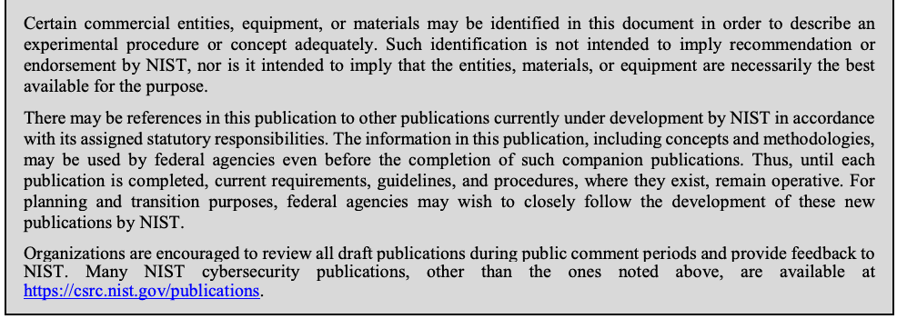
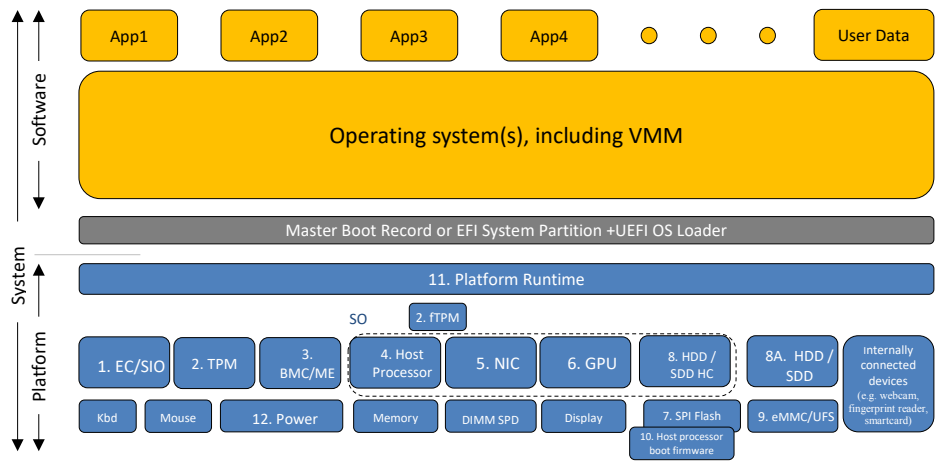
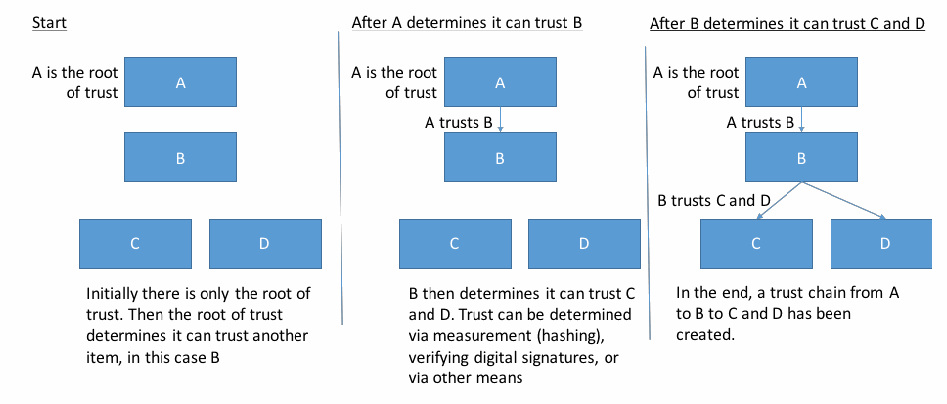
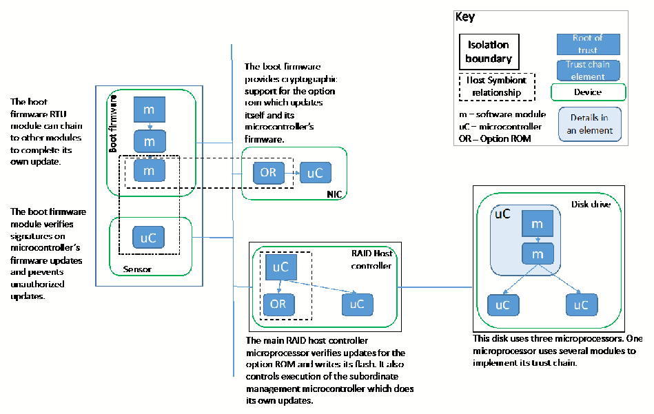

NIST Special Publication · PDF 原文抽出
Platform Firmware Resiliency Guidelines
プラットフォームファームウェアのレジリエンスに関する指針
NIST SP 800-193（Platform Firmware Resiliency Guidelines）の英文と日本語訳を段落ごとに並べた閲覧用ページです。不正な変更からプラットフォームファームウェアを保護し、変更を検出し、攻撃から迅速かつ安全に復旧するための技術的指針を示します。 翻訳は有志による非公式のもので、NIST および米国商務省が作成・承認・推奨したものではありません。要件の確認にはNIST の正式版 PDFを参照してください。
PDF から抽出した原文は原本との照合待ちです。
PDF p.11: 図1と図中ラベルが複数ブロック・トリミング画像に分割されているため、原本で配置と読み順を照合してください（本文は二段組ではありません）。
PDF p.44: 用語表の用語と定義が複数ブロックに分割されています。原本で対応関係を照合してください。
本文の数式はLaTeXの構造からKaTeXで表示しています。
NIST Special Publication 800-193
NIST Special Publication 800-193
Platform Firmware Resiliency
プラットフォームファームウェアの耐障害性
未レビュー訳Guidelines
ガイドライン
未レビュー訳Andrew Regenscheid
Andrew Regenscheid
This publication is available free of charge from: https://doi.org/10.6028/NIST.SP.800-193
本出版物は以下から無料で入手できます: https://doi.org/10.6028/NIST.SP.800-193
C O M P U T E R S E C U R I T Y
コンピュータセキュリティ
［NIST のロゴ。公的な標章のため、この非公式サイトには掲載していない。原本 PDF を参照。］
NIST Special Publication 800-193
NIST Special Publication 800-193
Platform Firmware Resiliency Guidelines
翻訳準備中
Andrew Regenscheid
翻訳準備中
Computer Security Division Information Technology Laboratory
翻訳準備中
This publication is available free of charge from: https://doi.org/10.6028/NIST.SP.800-193
本出版物は以下より無料で入手可能です: https://doi.org/10.6028/NIST.SP.800-193
May 2018
2018年5月
U.S. Department of Commerce
翻訳準備中
Wilbur L. Ross, Jr., Secretary
翻訳準備中
National Institute of Standards and Technology
翻訳準備中
Walter Copan, NIST Director and Under Secretary of Commerce for Standards and Technology
翻訳準備中
Authority
翻訳準備中
This publication has been developed by NIST in accordance with its statutory responsibilities under the Federal Information Security Modernization Act (FISMA) of 2014, 44 U.S.C. § 3551 et seq., Public Law (P.L.) 113-283. NIST is responsible for developing information security standards and guidelines, including minimum requirements for federal information systems, but such standards and guidelines shall not apply to national security systems without the express approval of appropriate federal officials exercising policy authority over such systems. This guideline is consistent with the requirements of the Office of Management and Budget (OMB) Circular A-130.
本出版物は、2014年連邦情報セキュリティ近代化法（FISMA）、合衆国法典第44編第3551条以下、公開法（P.L.）113-283に基づく法定責任に従ってNISTにより作成された。NISTは、連邦情報システムの最小限のセキュリティ要件を含む、情報セキュリティ基準およびガイドラインを策定する責任を負っているが、そのような基準およびガイドラインは、それらのシステムに対して方針決定権を行使する適切な連邦政府職員の明示的な承認がない限り、国家安全保障システムには適用されないものとする。本ガイドラインは、行政管理予算局（OMB）サーキュラーA-130の要件と整合している。
Nothing in this publication should be taken to contradict the standards and guidelines made mandatory and binding on federal agencies by the Secretary of Commerce under statutory authority. Nor should these guidelines be interpreted as altering or superseding the existing authorities of the Secretary of Commerce, Director of the OMB, or any other federal official. This publication may be used by nongovernmental organizations on a voluntary basis and is not subject to copyright in the United States. Attribution would, however, be appreciated by NIST.
本出版物のいかなる内容も、法定の権限に基づき商務長官によって連邦機関に対して義務的かつ拘束力を持つものとされた基準およびガイドラインに矛盾するものと解釈されるべきではない。また、これらのガイドラインは、商務長官、OMB長官、またはその他の連邦政府職員の既存の権限を変更または優先するものと解釈されるべきではない。本出版物は、非政府組織によって自発的に使用される場合があり、米国内において著作権の対象とはならない。ただし、NISTによるものである旨のクレジットを明記していただければ幸いである。
National Institute of Standards and Technology Special Publication 800-193 Natl. Inst. Stand. Technol. Spec. Publ. 800-193, 45 pages (May 2018) CODEN: NSPUE2
翻訳準備中
This publication is available free of charge from: https://doi.org/10.6028/NIST.SP.800-193
本出版物は、以下より無料で入手可能である：https://doi.org/10.6028/NIST.SP.800-193

抽出したテキスト（原本と未照合・参考）
Certain commercial entities, equipment, or materials may be identified in this document in order to describe an experimental procedure or concept adequately. Such identification is not intended to imply recommendation or endorsement by NIST, nor is it intended to imply that the entities, materials, or equipment are necessarily the best available for the purpose. There may be references in this publication to other publications currently under development by NIST in accordance with its assigned statutory responsibilities. The information in this publication, including concepts and methodologies, may be used by federal agencies even before the completion of such companion publications. Thus, until each publication is completed, current requirements, guidelines, and procedures, where they exist, remain operative. For planning and transition purposes, federal agencies may wish to closely follow the development of these new publications by NIST. Organizations are encouraged to review all draft publications during public comment periods and provide feedback to NIST. Many NIST cybersecurity publications, other than the ones noted above, are available at https://csrc.nist.gov/publications.抽出したテキストの訳（原本と未照合・参考）
実験手順または概念を適切に説明するために、特定の営利企業、機器、または資材が本文書で特定される場合がある。そのような特定は、NISTによる推奨または支持を意味することを意図したものではなく、またそれらの企業、資材、または機器がその目的にとって必ずしも利用可能な最善のものであることを意味することを意図したものでもない。本出版物では、割り当てられた法定責任に従ってNISTが現在開発中の他の出版物に言及している場合がある。本出版物に含まれる概念や方法論を含む情報は、そのような関連出版物の完成前であっても連邦機関によって使用される場合がある。したがって、各出版物が完成するまでは、現行の要件、ガイドライン、および手順が存在する場合、それらは有効なままである。計画および移行の目的で、連邦機関はNISTによるこれらの新しい出版物の開発動向を注視することが望まれる場合がある。組織は、パブリックコメント期間中にすべてのドラフト出版物をレビューし、NISTにフィードバックを提供することが推奨される。上記に記載されたもの以外の多くのNISTサイバーセキュリティ関連の出版物は、https://csrc.nist.gov/publications で入手可能である。Comments on this publication may be submitted to:
翻訳準備中
National Institute of Standards and Technology Attn: Computer Security Division, Information Technology Laboratory 100 Bureau Drive (Mail Stop 8930) Gaithersburg, MD 20899-8930 Email: sp800-193comments@nist.gov
翻訳準備中
All comments are subject to release under the Freedom of Information Act (FOIA).
すべてのコメントは、情報公開法（FOIA）に基づき公開の対象となる。
Reports on Computer Systems Technology
コンピュータシステム技術に関するレポート
The Information Technology Laboratory (ITL) at the National Institute of Standards and Technology (NIST) promotes the U.S. economy and public welfare by providing technical leadership for the Nation’s measurement and standards infrastructure. ITL develops tests, test methods, reference data, proof of concept implementations, and technical analyses to advance the development and productive use of information technology. ITL’s responsibilities include the development of management, administrative, technical, and physical standards and guidelines for the cost-effective security and privacy of other than national security-related information in federal information systems. The Special Publication 800-series reports on ITL’s research, guidelines, and outreach efforts in information system security, and its collaborative activities with industry, government, and academic organizations.
米国国立標準技術研究所（NIST）の情報技術研究所（ITL）は、米国の測定および標準インフラストラクチャに対する技術的リーダーシップを提供することにより、米国経済と公共の福祉を促進する。ITLは、情報技術の開発と生産的な利用を前進させるため、テスト、テスト方法、参照データ、概念実証実装、および技術分析を策定する。ITLの責務には、連邦政府の情報システムにおける国家安全保障関連情報以外の情報の、費用対効果の高いセキュリティおよびプライバシーのための、管理上、行政上、技術上、および物理的な標準とガイドラインの策定が含まれる。Special Publication 800シリーズは、情報システムセキュリティにおけるITLの研究、ガイドライン、アウトリーチ活動、ならびに産業界、政府、学術機関との共同活動について報告するものである。
Abstract
概要
This document provides technical guidelines and recommendations supporting resiliency of platform firmware and data against potentially destructive attacks. The platform is a collection of fundamental hardware and firmware components needed to boot and operate a system. A successful attack on platform firmware could render a system inoperable, perhaps permanently, or requiring reprogramming by the original manufacturer, resulting in significant disruptions to users. The technical guidelines in this document promote resiliency in the platform by describing security mechanisms for protecting the platform against unauthorized changes, detecting unauthorized changes that occur, and recovering from attacks rapidly and securely. Implementers, including Original Equipment Manufacturers (OEMs) and component/device suppliers, can use these guidelines to build stronger security mechanisms into platforms. System administrators, security professionals, and users can use this document to guide procurement strategies and priorities for future systems.
本書は、破壊的な可能性のある攻撃に対するプラットフォームファームウェアおよびデータのレジリエンスを支援する技術的ガイドラインと推奨事項を提供する。プラットフォームとは、システムの起動と運用に必要な基本的なハードウェアおよびファームウェアコンポーネントの集合体である。プラットフォームファームウェアへの攻撃が成功すると、システムが、場合によっては恒久的に動作不能になるか、元の製造元による再プログラミングが必要となり、ユーザーに重大な混乱をもたらす可能性がある。本書の技術ガイドラインは、プラットフォームを不正な変更から保護し、発生した不正な変更を検知し、攻撃から迅速かつ安全に回復するためのセキュリティメカニズムを説明することで、プラットフォームのレジリエンスを促進する。相手先ブランド製造会社（OEM）やコンポーネント／デバイスサプライヤーなどの実装者は、これらのガイドラインを使用して、プラットフォームにより強固なセキュリティメカニズムを組み込むことができる。システム管理者、セキュリティ専門家、およびユーザーは、将来のシステムの調達戦略および優先順位の指針として本書を活用できる。
Keywords
キーワード
BIOS; Code signing; Firmware; Option ROM; Platform Firmware
BIOS、コード署名、ファームウェア、Option ROM、プラットフォームファームウェア
未レビュー訳Acknowledgements
翻訳準備中
The author, Andrew Regenscheid of the National Institute of Standards and Technology (NIST), wishes to thank his colleagues who reviewed drafts of this document and contributed to its technical content. In particular, NIST appreciates the contributions from experts from industry and government who helped guide this work. These experts included Chirag Schroff from Cisco; Mukund Khatri from Dell; CJ Coppersmith, Gary Campbell, Shiva Dasari, and Tom Laffey from Hewlett Packard Enterprise; Jim Mann from HP Inc.; Charles Palmer from IBM; Bob Hale, David Riss, and Vincent Zimmer from Intel Corporation; Paul England and Rob Spiger from Microsoft, and Shane Steiger.
著者である米国国立標準技術研究所（NIST）のAndrew Regenscheidは、本書のドラフトを査読し、その技術的内容に貢献してくれた同僚たちに感謝の意を表する。特にNISTは、本研究の指針決定を支援してくださった業界および政府の専門家からの貢献に感謝する。これらの専門家には、CiscoのChirag Schroff氏、DellのMukund Khatri氏、Hewlett Packard EnterpriseのCJ Coppersmith氏、Gary Campbell氏、Shiva Dasari氏、Tom Laffey氏、HP Inc.のJim Mann氏、IBMのCharles Palmer氏、Intel CorporationのBob Hale氏、David Riss氏、Vincent Zimmer氏、MicrosoftのPaul England氏およびRob Spiger氏、ならびにShane Steiger氏が含まれる。
NIST would also like to acknowledge and thank Kevin Bingham, Cara Steib, and Mike Boyle, from the National Security Agency, who provided substantial contributions to this document, as well as Jeffrey Burke from Noblis NSP.
また、NISTは、本書に多大な貢献をした国家安全保障局（NSA）のKevin Bingham氏、Cara Steib氏、Mike Boyle氏、ならびにNoblis NSPのJeffrey Burke氏にも謝意を表する。
Audience
対象読者
The intended audience for this document includes system and platform device vendors of computer systems, including manufacturers of client, servers, and networking devices. The security principles and recommendations contained in this document should be broadly applicable to other classes of systems with updatable firmware, including Internet of Things devices, embedded systems, and mobile devices. The technical guidelines assume readers have expertise in the platform architectures and are targeted primarily at developers and engineers responsible for implementing firmware-level security technologies in systems and devices.
本書の想定読者には、クライアント、サーバー、およびネットワーク機器の製造業者を含む、コンピューターシステムのシステムベンダーおよびプラットフォームデバイスベンダーが含まれる。本書に含まれるセキュリティ原則および推奨事項は、モノのインターネット（IoT）デバイス、組み込みシステム、モバイルデバイスなど、更新可能なファームウェアを備えた他のクラスのシステムにも広く適用できるはずである。本技術ガイドラインは、読者がプラットフォームアーキテクチャの専門知識を有していることを前提としており、主にシステムおよびデバイスにおけるファームウェアレベルのセキュリティ技術の実装を担当する開発者およびエンジニアを対象としている。
Trademark Information
商標情報
All product names are registered trademarks or trademarks of their respective companies
翻訳準備中
Executive Summary
翻訳準備中
Modern computing system architectures can be thought of in layers. The top layers are software, composed of the operating system and applications. While these provide most of the functional capabilities employed by users, they rely on functions and services provided by the underlying layers, which this document collectively refers to as the platform. The platform includes the hardware and firmware components necessary to initialize components, boot the system, and provide runtime services implemented by hardware components.
現代のコンピューティングシステムアーキテクチャは、階層構造として考えることができる。最上位の層はソフトウェアであり、オペレーティングシステムとアプリケーションで構成される。これらはユーザーが利用する機能の大部分を提供するが、下位層によって提供される機能やサービスに依存しており、本書ではこれらを総称してプラットフォームと呼ぶ。プラットフォームには、コンポーネントの初期化、システムの起動、およびハードウェアコンポーネントによって実装されるランタイムサービスの提供に必要なハードウェアおよびファームウェアのコンポーネントが含まれる。
Platform firmware, and its associated configuration data, is critical to the trustworthiness of a computing system. Much of this firmware is highly privileged in the system architectures, and because this firmware is necessary for the system to operate, repairing this firmware can be challenging. A successful attack on platform firmware could render a system inoperable, perhaps permanently or requiring reprogramming by the original manufacturer, resulting in significant disruptions to users. Other sophisticated malicious attacks could attempt to inject persistent malware in this firmware, modifying critical low-level services to disrupt operations, exfiltrate data, or otherwise impact the security posture of a computer system.
プラットフォームファームウェアおよびその関連構成データは、コンピューティングシステムの信頼性にとって極めて重要である。このファームウェアの多くはシステムアーキテクチャにおいて高い特権を有しており、システムが動作するために不可欠であるため、このファームウェアの修復は困難を伴う場合がある。プラットフォームファームウェアへの攻撃が成功すると、システムが、場合によっては恒久的に動作不能になるか、元の製造元による再プログラミングが必要となり、ユーザーに重大な混乱をもたらす可能性がある。その他の高度な悪意ある攻撃では、このファームウェアに持続的なマルウェアを注入し、重要な低レベルサービスを変更して運用を妨害したり、データを窃取したり、あるいはコンピューターシステムのセキュリティ体制に影響を与えたりすることを試みる可能性がある。
Earlier NIST publications have addressed the threat of attacks on one particular type of platform firmware: boot firmware, commonly known as the Basic Input/Output System (BIOS). However, the platform consists of many other devices with firmware and configuration data. These devices, including storage and network controllers, graphics processing units, and service processors, are also highly-privileged and needed for systems to behave securely and reliably.
以前のNIST刊行物では、特定の種類のプラットフォームファームウェアであるブートファームウェア（一般にBasic Input/Output System（BIOS）として知られる）に対する攻撃の脅威を取り上げた。しかし、プラットフォームは、ファームウェアおよび構成データを備えた他の多くのデバイスで構成されている。ストレージコントローラーやネットワークコントローラー、グラフィックスプロセッシングユニット（GPU）、サービスプロセッサーなどのこれらのデバイスも高い特権を持ち、システムが安全かつ確実に動作するために必要とされる。
This document provides technical guidelines intended to support resiliency of platforms against potentially destructive attacks. These guidelines are based on the following three principles:
本書は、潜在的に破壊的な攻撃に対するプラットフォームの耐障害性（レジリエンス）を支援することを意図した技術的ガイドラインを提供する。これらのガイドラインは、以下の3つの原則に基づいている。
•Protection: Mechanisms for ensuring that Platform Firmware code and critical data remain in a state of integrity and are protected from corruption, such as the process for ensuring the authenticity and integrity of firmware updates.
•保護（Protection）：ファームウェアのアップデートの真正性および完全性を確保するプロセスなど、プラットフォームファームウェア（Platform Firmware）のコードおよび重要なデータが完全な状態に維持され、破損から保護されることを保証するためのメカニズム。
•Detection: Mechanisms for detecting when Platform Firmware code and critical data have been corrupted.
•検知（Detection）：プラットフォームファームウェアのコードおよび重要なデータが破損した時点を検知するためのメカニズム。
•Recovery: Mechanisms for restoring Platform Firmware code and critical data to a state of integrity in the event that any such firmware code or critical data are detected to have been corrupted, or when forced to recover through an authorized mechanism. Recovery is limited to the ability to recover firmware code and critical data.
•回復（Recovery）：プラットフォームファームウェアのコードまたは重要なデータが破損したと検知された場合、または認可されたメカニズムによって強制的に回復される場合に、それらのファームウェアコードおよび重要なデータを完全な状態に復元するためのメカニズム。回復は、ファームウェアコードおよび重要なデータを回復する能力に限定される。
These guidelines are intended to address platforms in personal computer (PC) clients, servers, and network devices, but should be broadly applicable to other classes of systems. Implementers, including Original Equipment Manufacturers (OEMs) and component/device suppliers, can use these guidelines to build stronger security mechanisms into platforms. System administrators, security professionals, and users can use this document to guide procurement strategies and priorities for future systems.
これらのガイドラインは、パーソナルコンピュータ（PC）クライアント、サーバー、およびネットワークデバイスにおけるプラットフォームを対象とすることを意図しているが、他のクラスのシステムにも広く適用できるはずである。相手先ブランド製造会社（OEM）やコンポーネント／デバイスサプライヤーを含む実装者は、これらのガイドラインを使用して、プラットフォームにより強力なセキュリティメカニズムを組み込むことができる。システム管理者、セキュリティ専門家、およびユーザーは、本書を使用して、将来のシステムに対する調達戦略および優先順位の指針とすることができる。
Table of Contents
目次
Executive Summary..................................................................................................................... iv
エグゼクティブサマリー..................................................................................................................... iv
未レビュー訳1 Introduction — 1
1 はじめに — 1
未レビュー訳1.1 Purpose — 1
1.1 目的 — 1
未レビュー訳1.2 Audience — 1
1.2 対象読者 — 1
未レビュー訳1.3 Applicability and Scope — 2
1.3 適用可能性と範囲 — 2
1.4 Document Structure — 2
1.4 ドキュメントの構成 — 2
2 Platform Architecture — 3
2 プラットフォームアーキテクチャ — 3
2.1 Platform Devices — 4
2.1 プラットフォームデバイス — 4
2.2 Code and Data in Platform Devices — 7
2.2 プラットフォームデバイス内のコードとデータ — 7
2.2.1 Code — 7
2.2.1 コード — 7
未レビュー訳2.2.2 Data — 7
2.2.2 データ — 7
3 Principles and Key Concepts — 10
3 原則と主要な概念 — 10
3.1 Principles Supporting Platform Resiliency — 10
3.1 プラットフォームレジリエンスを支える原則 — 10
3.2 Resiliency Properties — 10
3.2 レジリエンス特性 — 10
3.3 Roots of Trust and Chains of Trust — 11
3.3 信頼の起点と信頼の連鎖 — 11
3.4 Device Relationships — 12
3.4 デバイスの関係 — 12
3.5 Firmware Update Mechanisms — 14
3.5 ファームウェア更新メカニズム — 14
3.5.1 Authenticated Update Mechanism — 14
3.5.1 認証済み更新メカニズム — 14
3.5.2 Authorized Update Mechanism — 14
3.5.2 認可された更新メカニズム — 14
3.5.3 Secure Local Update — 15
3.5.3 セキュアなローカル更新 — 15
3.6 Other Considerations for Platform Resiliency — 16
3.6 プラットフォームレジリエンスに関するその他の考慮事項 — 16
3.6.1 Management — 16
3.6.1 管理 — 16
3.6.2 Authorization Mechanisms — 16
3.6.2 認可メカニズム — 16
3.6.3 Network-Assisted vs. Local Recovery — 17
3.6.3 ネットワーク支援型回復とローカル回復 — 17
3.6.4 Automated vs. Manual Recovery — 17
3.6.4 自動回復と手動回復 — 17
3.6.5 Event Logging — 18
3.6.5 イベントロギング — 18
4 Firmware Security Guidelines for Platform Devices — 19
4 プラットフォームデバイスのファームウェアセキュリティガイドライン — 19
4.1 Roots of Trust — 19
4.1 信頼の起点（Roots of Trust） — 19
未レビュー訳4.1.1 Roots of Trust (RoT) and Chains of Trust (CoT) — 20
4.1.1 信頼の起点（RoT）および信頼の連鎖（CoT） — 20
4.1.2 Root of Trust for Update (RTU) and Chain of Trust for Update (CTU) — 20
4.1.2 更新の信頼の起点（RTU）および更新の信頼の連鎖（CTU） — 20
4.1.3 Root of Trust for Detection (RTD) and Chain of Trust for Detection (CTD) 21
4.1.3 検知の信頼の起点（RTD）および検知の信頼の連鎖（CTD） 21
未レビュー訳4.1.4 Root of Trust for Recovery (RTRec) and Chain of Trust for Recovery (CTRec) — 21
翻訳準備中
4.2 Protection — 21
翻訳準備中
4.2.1 Protection and Update of Mutable Code — 22
4.2.1 変更可能コードの保護と更新 — 22
4.2.2 Protection of Immutable Code — 23
4.2.2 不変コードの保護 — 23
4.2.3 Runtime Protection of Critical Platform Firmware — 23
4.2.3 クリティカルなプラットフォームファームウェアのランタイム保護 — 23
4.2.4 Protection of Critical Data — 24
4.2.4 クリティカルデータの保護 — 24
4.3 Detection — 25
翻訳準備中
4.3.1 Detection of Corrupted Code — 25
4.3.1 破損したコードの検知 — 25
4.3.2 Detection of Corrupted Critical Data — 26
4.3.2 破損したクリティカルデータの検知 — 26
4.4 Recovery — 27
翻訳準備中
4.4.1 Recovery of Mutable Code — 27
4.4.1 変更可能コードの回復 — 27
4.4.2 Recovery of Critical Data — 28
4.4.2 クリティカルデータの回復 — 28
List of Appendices
付録一覧
Appendix A— Acronyms — 30
付録A— 略語 — 30
Appendix B— Glossary — 31
付録B— 用語集 — 31
Appendix C— References — 37
付録C— 参考文献 — 37
List of Figures
図一覧
Figure 1: High-Level System Architecture — 3
図1: 高レベルシステムアーキテクチャ — 3
Figure 2: Roots of Trust — 12
図2: 信頼の起点 — 12
Figure 3: Trust Chains — 13
図3: 信頼の連鎖 — 13
1 Introduction
翻訳準備中
1.1 Purpose
1.1 目的
Modern computing and information technology systems are built upon a variety of hardware components that provide the fundamental capabilities required by the system to operate. Many of these hardware components have firmware and configuration data that drive their behavior, and which must remain in a state with integrity in order for the system to function properly. One example of such firmware is commonly referred to as the Basic Input/Output System (BIOS), which is used to facilitate the hardware initialization process and transition control to the operating system. Depending on the system, there may be tens or hundreds of microcontrollers with other kinds of programmable firmware which support the overall system architecture. That collection of hardware and firmware components is typically called the platform.
現代のコンピューティングおよび情報技術システムは、システムが動作するために必要な基本機能を提供する多様なハードウェアコンポーネント上に構築されている。これらのハードウェアコンポーネントの多くには、その動作を制御するファームウェアおよび構成データが存在し、システムが適切に機能するためには、それらが完全性を備えた状態に維持されていなければならない。そのようなファームウェアの一例として一般的に呼ばれるのがBasic Input/Output System（BIOS）であり、ハードウェアの初期化プロセスの促進およびオペレーティングシステムへの制御の移行に使用される。システムによっては、システムアーキテクチャ全体をサポートする、他の種類のプログラム可能なファームウェアを備えた数十から数百のマイクロコントローラが存在する場合がある。これらハードウェアおよびファームウェアコンポーネントの集合体は、一般にプラットフォームと呼ばれる。
The devices which make up the platform are crucial to integrity and availability of the systems built upon the platform. Without these devices, systems may fail to operate correctly, or may not operate at all. Targeted attacks at certain devices within the platform could significantly impact the security posture of these systems, possibly allowing a low-level, persistent malware presence. Attacks which aim to damage or remove platform firmware have the potential to render systems permanently damaged, incurring substantial costs to the affected parties.
プラットフォームを構成するデバイスは、そのプラットフォーム上に構築されるシステムの完全性と可用性にとって極めて重要である。これらのデバイスがなければ、システムは正しく動作しなくなったり、まったく動作しなくなったりする可能性がある。プラットフォーム内の特定のデバイスを標的とした攻撃は、これらのシステムのセキュリティ体制に重大な影響を与え、低レベルで持続的なマルウェアの侵入を許す可能性がある。プラットフォームファームウェアの破損または削除を目的とした攻撃は、システムに修復不可能な損傷を与え、被害を受けた関係者に多大なコストを発生させる可能性がある。
The purpose of this document is to provide security guidelines to support system resiliency at a platform level. As defined by the International Council of Systems Engineering (INCOSE), system resilience is “the capability of a system with specific characteristics before, during and after a disruption to absorb the disruption, recover to an acceptable level of performance, and sustain that level for an acceptable period of time.” [10] Applied to information systems, cyber resiliency is “ability to anticipate, withstand, recover from, and adapt to adverse conditions, stresses, attacks, or compromises on systems that include cyber resources.” While guidelines on cyber resiliency at a system level are described in draft NIST Special Publication 800-160, Volume 2, this publication notes that system-level resiliency should be supported by foundational security capabilities in computer platforms. The guidelines in this document support cyber resiliency by specifying mechanisms that protect firmware and configuration data from attacks, and that can detect and recover from successful attacks.
本書の目的は、プラットフォームレベルでのシステムレジリエンスをサポートするためのセキュリティガイドラインを提供することである。国際システム工学協議会（INCOSE）によって定義されているように、システムレジリエンスとは「混乱の発生前、発生中、および発生後における、特定の特性を持つシステムが混乱を吸収し、許容可能なパフォーマンスレベルまで回復し、そのレベルを許容可能な期間維持する能力」である[10]。情報システムに適用されるサイバーレジリエンスとは、「サイバーリソースを含むシステムに対する有害な条件、ストレス、攻撃、または侵害を予測し、耐え、そこから回復し、適応する能力」である。システムレベルでのサイバーレジリエンスに関するガイドラインはNIST Special Publication 800-160第2巻のドラフトに記載されているが、本出版物は、システムレベルのレジリエンスはコンピュータプラットフォームにおける基本的なセキュリティ機能によってサポートされるべきであると述べている。本書のガイドラインは、攻撃からファームウェアおよび構成データを保護し、成功した攻撃を検出してそこから回復できるメカニズムを規定することによって、サイバーレジリエンスをサポートする。
1.2 Audience
1.2 想定読者
The intended audience for this document includes system and platform device vendors of computer systems, including manufacturers of clients, servers and networking devices. The technical guidelines assume readers have expertise in the platform architectures and are targeted primarily at developers and engineers responsible for implementing firmware-level security technologies in systems and devices.
本書の想定読者には、クライアント、サーバー、ネットワーク機器の製造業者を含む、コンピューターシステムのシステムベンダーおよびプラットフォームデバイスベンダーが含まれる。本技術ガイドラインは、読者がプラットフォームアーキテクチャに関する専門知識を有していることを前提としており、主にシステムやデバイスにおいてファームウェアレベルのセキュリティ技術の実装を担当する開発者やエンジニアを対象としている。
The material may also be of use when developing enterprise-wide procurement strategies and deployment. The material in this document is technically oriented, and it is assumed that readers have at least a basic understanding of computer security principles and computer architectures. The document provides background information to help such readers understand the topics that are discussed.
本資料は、全社的な調達戦略および導入を策定する際にも役立つ場合がある。本書の内容は技術的なものであり、読者がコンピューターセキュリティの原則およびコンピューターアーキテクチャに関する基本的な理解を少なくとも有していることを前提としている。本書は、読者が取り上げられているトピックを理解するのに役立つ背景情報を提供する。
1.3 Applicability and Scope
1.3 適用可能性および適用範囲
The goal of this document is to provide principles and guidelines that can support platform resiliency primarily against remote attacks. These principles and guidelines directly apply to the individual devices that make up a platform (see Section 2.1 for a list of examples). Specifically, they describe security mechanisms aimed at protecting each device from unauthorized changes to its firmware or critical data and restoring the platform to a state of integrity.
本書の目的は、主にリモート攻撃に対するプラットフォームのレジリエンスをサポートできる原則とガイドラインを提供することである。これらの原則とガイドラインは、プラットフォームを構成する個々のデバイスに直接適用される（例のリストについてはセクション2.1を参照）。具体的には、各デバイスをそのファームウェアやクリティカルデータへの不正な変更から保護し、プラットフォームを完全性の状態に復元することを目的としたセキュリティメカニズムについて説明している。
1.4 Document Structure
1.4 本書の構成
The remainder of this document is organized into the following major sections:
本書の残りの部分は、以下の主要なセクションで構成される。
•Section 2 provides informative material describing platform components and architectures.
•セクション2では、プラットフォームのコンポーネントとアーキテクチャを説明する参考情報を提供する。
•Section 3 describes the security principles that form the basis for the guidelines in this document, and describes key concepts for applying these principles to platform resiliency.
•セクション3では、本書のガイドラインの基礎となるセキュリティ原則について説明し、これらの原則をプラットフォームレジリエンスに適用するための主要な概念について説明する。
•Section 4 contains technical security guidelines for protection of firmware code and critical data, detection of authorized changes, and recovery to a state of integrity.
•セクション4には、ファームウェアコードおよびクリティカルデータの保護、許可された変更の検出、ならびに完全性の状態への回復に関する技術的セキュリティガイドラインが記載されている。
•Appendix A provides an acronym and abbreviation list for the document.
•付録Aには、本文書の頭字語および略語の一覧を掲載している。
•Appendix B presents a glossary of selected terms from the document.
•付録Bには、本文書から選定された用語集を掲載している。
•Appendix C contains a list of references for the document.
•付録Cには、本文書の参考文献の一覧が記載されている。
2 Platform Architecture
2 プラットフォームアーキテクチャ
未レビュー訳Ensuring a platform’s firmware code and critical data are always in a state of integrity is critical to ensure that a computing system can be operated free from malware. Modern client and server computing systems can be considered to be separated into two high-level logical constructs, platform and software. For the purposes of this document, we will describe the combination of these two logical constructs as a system. Note that Figure 1 is merely illustrative and is not intended to represent all possible devices in a platform, nor is it intended to represent an exemplary architecture for any particular device. At a high-level, items in blue-shaded boxes are devices to be considered part of a platform.
プラットフォームのファームウェアコードおよび重要データが常に完全な状態にあることを確実にすることは、コンピューティングシステムがマルウェアの影響を受けずに運用できる状態を確保するために極めて重要である。最近のクライアントおよびサーバのコンピューティングシステムは、プラットフォームとソフトウェアという2つの上位レベルの論理構造に分けられると考えることができる。本文書を目的として、これら2つの論理構造の組み合わせをシステムと記述する。図1は単なる例示であり、プラットフォーム内のすべての可能なデバイスを表すことを意図したものではなく、特定のデバイスの模範的なアーキテクチャを表すことを意図したものでもないことに留意されたい。上位レベルでは、青色網掛けのボックス内の項目が、プラットフォームの一部と見なされるデバイスである。
User Data
ユーザーデータ
未レビュー訳App1
App1
未レビュー訳App2
App2
未レビュー訳App3
App3
未レビュー訳App4
App4
未レビュー訳
黄色い長方形に「VMMを含むオペレーティングシステム」と記載。図1のソフトウェア層の一部。
Operating system(s), including VMM
オペレーティングシステム（VMMを含む）
未レビュー訳Master Boot Record or EFI System Partition +UEFI OS Loader
マスターブートレコードまたはEFIシステムパーティション＋UEFI OSローダー
未レビュー訳11.Platform Runtime
11.プラットフォームランタイム
未レビュー訳2.fTPM
2.fTPM
未レビュー訳SO
未レビュー訳8A. HDD / Internally
8A. HDD / 内部接続
未レビュー訳4 . H o s t
4. ホスト（Host）
未レビュー訳3 .
3.
未レビュー訳5.NIC 6. GPU 8 . H D D /
5.NIC 6. GPU 8. HDD /
未レビュー訳1.EC/SIO 2. TPM connected ME Pr o c e s s or BMC / S D D H C SDD devices (e.g.webcam,
1.EC/SIO 2. TPM 接続 ME プロセッサ（Processor） BMC / SDD HC SDD デバイス（例: ウェブカメラ、
未レビュー訳抽出したテキストの訳（原本と未照合・参考）
7. SPIフラッシュfingerprintreader,
指紋リーダー、
未レビュー訳9.eMMC/UFS
9.eMMC/UFS
未レビュー訳Kbd Mouse 12. Power Memory
キーボード マウス 12. 電源 メモリ
未レビュー訳Display
ディスプレイ
未レビュー訳DIMMSPD
DIMMSPD
未レビュー訳smartcard)
スマートカード)
未レビュー訳10.Hostprocessor bootfirmware
10. ホストプロセッサブートファームウェア
未レビュー訳Figure 1: High-Level System Architecture
図1：高レベルのシステムアーキテクチャ
Broadly speaking, the platform is comprised of hardware and firmware necessary to boot the system to a point at which software, or an operating system, can be loaded; software is comprised of elements required to load the operating system and all applications and data subsequently handled by the operating system. Note that some firmware continues to execute once software has started. Existing industry best practice, as well as NIST publications such as NIST SP 800-147, BIOS Protection Guidelines [1], and NIST SP 800-147B, BIOS Protection Guidelines for Servers [2], already address the issue of protecting the integrity of a platform’s host processor boot firmware (traditionally called BIOS, and more recently UEFI [3])1 and its update mechanisms, but protection is only one of three key elements of cyber resiliency (the other two being detection and recovery). Additionally, the resilience of other critical firmware on the platform has not yet been addressed to the level the host processor boot firmware has been. While it is beyond the scope of this document to identify and define every category and architecture of device which contains firmware, this document is applicable to any device in the platform which contains firmware, inclusive of PCs, servers, networking devices, smartphones, tablets, etc.
大まかに言えば、プラットフォームは、ソフトウェアまたはオペレーティングシステムがロードできる状態までシステムを起動するために必要なハードウェアおよびファームウェアで構成される。ソフトウェアは、オペレーティングシステム、およびその後オペレーティングシステムによって処理されるすべてのアプリケーションとデータをロードするために必要な要素で構成される。一部のファームウェアは、ソフトウェアが起動した後も実行を継続することに注意すること。既存の業界のベストプラクティス、ならびにNIST SP 800-147『BIOS Protection Guidelines』[1] や NIST SP 800-147B『BIOS Protection Guidelines for Servers』[2] などのNIST刊行物は、プラットフォームのホストプロセッサブートファームウェア（従来はBIOS、近年ではUEFI [3] と呼ばれる）1 およびその更新メカニズムの完全性を保護する問題にすでに対処しているが、保護はサイバーレジリエンスの3つの主要要素（他の2つは検知および復旧）の1つにすぎない。さらに、プラットフォーム上の他の重要なファームウェアのレジリエンスについては、ホストプロセッサブートファームウェアと同等のレベルではまだ対処されていない。ファームウェアを含むあらゆるデバイスのカテゴリおよびアーキテクチャを特定および定義することは本書の範囲外であるが、本書は、PC、サーバー、ネットワーキングデバイス、スマートフォン、タブレットなどを含め、ファームウェアを含むプラットフォーム内のあらゆるデバイスに適用される。
未レビュー訳2.1 Platform Devices
2.1 プラットフォームデバイス
As noted above, the platform is a collection of devices that provide the functional capabilities and services needed by the operating system and applications. While resiliency of the platform as a whole is the ultimate objective, it is important to recognize that the platform is composed of many different devices, often developed and manufactured by different vendors. For that reason, the technical guidelines in this document are described in terms of guidelines for individual platform devices.
上述のように、プラットフォームは、オペレーティングシステムやアプリケーションが必要とする機能およびサービスを提供するデバイスの集合体である。プラットフォーム全体としてのレジリエンスが最終的な目標であるが、プラットフォームは多くの場合、異なるベンダーによって開発・製造された多種多様なデバイスで構成されていることを認識することが重要である。そのため、本書における技術的ガイドラインは、個々のプラットフォームデバイスに対するガイドラインとして記述されている。
For the purposes of describing a resilient platform, this section provides a list of devices which are often critical to the normal and secure operation of a platform. These devices typically contain mutable firmware, and are covered by the intended scope of the security guidelines in this document.
レジリエントなプラットフォームを説明する目的で、本節では、プラットフォームの正常かつ安全な運用において極めて重要となることが多いデバイスの一覧を提供する。これらのデバイスは通常、変更可能なファームウェアを含んでおり、本書のセキュリティガイドラインの対象範囲に含まれている。
However, this should not be considered an exhaustive list of all devices in every platform of interest. Platform vendors will need to carefully consider other devices which should be regarded as in scope for their particular platform.
ただし、これを対象となるすべてのプラットフォームにおける全デバイスの網羅的なリストと見なすべきではない。プラットフォームベンダーは、それぞれの特定のプラットフォームにおいて対象範囲と見なすべき他のデバイスを慎重に検討する必要がある。
In the case of a traditional x86-based platform (desktop, notebook, server, network switch), these devices are identified in Figure 1, and are defined below. Note that the numbers here reference those used to label the devices in Figure 1. The ordering is not meant to imply any priority or sequencing.
従来のx86ベースのプラットフォーム（デスクトップ、ノートPC、サーバー、ネットワークスイッチ）の場合、これらのデバイスは図1に示されており、以下で定義されている。ここでの番号は、図1のデバイスのラベル付けに使用されている番号を参照している点に注意されたい。順序は、優先順位やシーケンスを意味するものではない。
1. Embedded Controller (EC) / Super I/O (SIO)
1. エンベデッドコントローラ（EC） / Super I/O（SIO）
An EC is typically associated with mobile platforms (notebooks, convertibles, tablets), while a SIO is typically associated with desk-based platforms (desktops, desk-based workstations, All-in-Ones, Thin Clients). This is not universally true, but is generally true enough to establish the type of client system in which one might find an EC or SIO. An EC or SIO typically controls functions in the platform such as the keyboard, LEDs, fans, battery monitoring/charging, thermal monitoring, etc. Additionally, it is typically the first system board device in the platform to execute code, even holding the host processor in reset until the EC/SIO is ready for the host processor to fetch its first line of host processor firmware code.
ECは通常、モバイルプラットフォーム（ノートPC、コンバーチブル、タブレット）に関連付けられ、SIOは通常、デスクベースのプラットフォーム（デスクトップ、デスクベースのワークステーション、All-in-One、シンクライアント）に関連付けられる。これは普遍的に当てはまるわけではないが、一般的にはECまたはSIOが存在し得るクライアントシステムの種類を判断するのに十分当てはまる。ECまたはSIOは通常、キーボード、LED、ファン、バッテリーの監視/充電、熱監視など、プラットフォーム内の機能を制御する。さらに、通常はプラットフォーム内でコードを実行する最初のシステムボードデバイスであり、EC/SIOがホストプロセッサによるホストプロセッサファームウェアコードの最初の行のフェッチの準備ができるまで、ホストプロセッサをリセット状態に維持することさえある。
2. Trusted Platform Module (TPM)
2. トラステッドプラットフォームモジュール（TPM）
A TPM [4] is a security coprocessor capable of securely storing and using cryptographic keys and measurements of the state of the platform. These capabilities can be used, among other things, to secure data stored on the system, provide a strong device identity, and to attest the state of the system. While not all platforms include or make use of a TPM, on any system in which a TPM is included and used, its firmware must be protected given its criticality in helping ensure the trustworthiness of the platform. TPMs also contain non-volatile memory storage which may contain critical data and, if so, must be protected. TPM’s can be either discrete hardware devices, or may be realized in firmware executed on a platform host controller or other microcontroller (the latter are sometimes referred to as firmware TPM’s, or fTPM).
TPM [4] は、暗号鍵およびプラットフォームの状態の測定値をセキュアに保存および使用できるセキュリティコプロセッサである。これらの機能は、特にシステム上に保存されたデータの保護、強力なデバイスアイデンティティの提供、およびシステムの状態の構成証明（アテスト）に使用できる。すべてのプラットフォームがTPMを搭載または利用しているわけではないが、TPMが搭載され使用されているあらゆるシステムにおいて、プラットフォームの信頼性確保を支援するその重要性を考慮すると、そのファームウェアは保護されなければならない。また、TPMには重要なデータが含まれる可能性のある不揮発性メモリストレージも含まれており、その場合は保護されなければならない。TPMはディスクリートハードウェアデバイスである場合もあれば、プラットフォームホストコントローラまたは他のマイクロコントローラ上で実行されるファームウェアとして実現される場合もある（後者はファームウェアTPM、またはfTPMと呼ばれることもある）。
3. Baseboard Management Controller (BMC) / Management Engine (ME)
3. ベースボード管理コントローラ（BMC） / マネジメントエンジン（ME）
A BMC is associated with server platforms while an ME is typically associated with client platforms. In both cases, a core aspect of their functionality is to serve as an out-of-band management device enabling platform administrators to manage a platform without requiring the host operating system to be running. While not always strictly necessary to the basic computing function of a server or client platform, most modern server and client platforms include a BMC/ME, making it critical that their firmware does not negatively affect the state of integrity of the host processor’s security domain.
BMCはサーバープラットフォームに関連付けられ、MEは通常クライアントプラットフォームに関連付けられる。どちらの場合も、それらの機能の中核的な側面は、ホストオペレーティングシステムが稼働していることを要求せずにプラットフォーム管理者がプラットフォームを管理できるようにするアウトオブバンド管理デバイスとして機能することである。サーバーまたはクライアントプラットフォームの基本的なコンピューティング機能にとって常に厳密に必要というわけではないが、現代のほとんどのサーバーおよびクライアントプラットフォームにはBMC/MEが搭載されており、それらのファームウェアがホストプロセッサのセキュリティドメインの完全性状態に悪影響を及ぼさないようにすることが極めて重要である。
未レビュー訳4. Host Processor [aka Central Processing Unit (CPU), aka Application Processing
4. ホストプロセッサ [別名：中央処理装置（CPU）、別名：アプリケーション処理
Unit (APU)] The host processor is the primary processing unit in a typical platform, traditionally called a CPU, and now also sometimes referred to as an APU or a System on a Chip (SoC). This is the processing unit on which the primary operating system (and/or hypervisor), as well as user applications run. This is the processor that is responsible for loading and executing the host processor firmware.
装置（APU）] ホストプロセッサは、典型的なプラットフォームにおける主要な処理装置であり、従来はCPUと呼ばれ、現在ではAPUまたはSystem on a Chip（SoC）と呼ばれることもある。これは、プライマリオペレーティングシステム（および/またはハイパーバイザー）、ならびにユーザーアプリケーションが実行される処理装置である。これは、ホストプロセッサファームウェアのロードおよび実行を担当するプロセッサである。
5. Network Interface Controller (NIC)
5. ネットワークインターフェイスコントローラ（NIC）
Whether discrete or integrated as part of an SoC, most modern client and server platforms have at least one NIC (wired or wireless), and could have multiple, including multiple types (wired, Wi-Fi, cellular). While having a NIC is not strictly required to boot a platform, in today’s connected world it’s important to have some form of connectivity at some point after a system has booted. More importantly, a compromised NIC firmware image could serve as a launch pad for other exploits in the system, be used to exfiltrate data, serve as a man-in-the-middle, etc. In addition to firmware run by a microcontroller, a NIC may include expansion Read-Only Memory (ROM) firmware which is loaded during boot and executed by the host processor. It is critical that a NIC’s expansion ROM firmware is also protected. The expansion ROM firmware may be stored with the host processor boot firmware (in the case of an integrated NIC), or may be stored separately with the NIC itself as in the case of an add-in card. A NIC often also contains critical data, for example a Media Access Control (MAC) address may be stored in mutable memory. An attack on this critical data could result in a denial of service (DoS) both of this platform as well as of another system with a matching MAC address.
ディスクリートであるかSoCの一部として統合されているかにかかわらず、最新のクライアントおよびサーバープラットフォームのほとんどには少なくとも1つのNIC（有線または無線）が搭載されており、複数のタイプ（有線、Wi-Fi、セルラー）を含む複数のNICが搭載されている場合もある。プラットフォームを起動するためにNICの搭載は厳密には必須ではないが、今日のコネクテッドな世界では、システムの起動後のいずれかの時点で何らかの接続形態を持つことが重要である。さらに重要なことに、侵害されたNICファームウェアイメージは、システム内の他のエクスプロイトの足がかりとして機能したり、データの持ち出し（流出）に使用されたり、中間者として機能したりする可能性がある。マイクロコントローラによって実行されるファームウェアに加えて、NICには、起動中にロードされホストプロセッサによって実行される拡張Read-Only Memory（ROM）ファームウェアが含まれる場合がある。NICの拡張ROMファームウェアも保護されていることが極めて重要である。拡張ROMファームウェアは、（統合NICの場合のように）ホストプロセッサのブートファームウェアとともに保存される場合もあれば、アドインカードの場合のようにNIC自体に個別に保存される場合もある。NICには重要なデータが含まれていることも多く、例えばメディアアクセス制御（MAC）アドレスが変更可能なメモリに保存されている場合がある。この重要なデータに対する攻撃は、このプラットフォームだけでなく、一致するMACアドレスを持つ別のシステムの両方に対するサービス拒否（DoS）を引き起こす可能性がある。
6. Graphics Processing Unit (GPU)
6. グラフィックスプロセッシングユニット（GPU）
A GPU is a device that serves as the primary ‘output’ human interface device (HID) in client platforms. In some cases, GPUs may also be used as coprocessors to support high-performance computing. GPUs could serve as a launch pad for other exploits in the system. In addition to firmware run by a microcontroller, a GPU may include an expansion ROM firmware which is loaded during boot and executed by the host processor. The expansion ROM firmware may be stored with the host processor boot firmware (in the case of an integrated GPU), or may be stored separately with the GPU itself as in the case of an add-in card.
GPUは、クライアントプラットフォームにおける主要な「出力」ヒューマンインターフェイスデバイス（HID）として機能するデバイスである。場合によっては、GPUは高性能コンピューティングをサポートするコプロセッサとしても使用されることがある。GPUは、システム内の他のエクスプロイトの足がかり（ローンチパッド）として機能する可能性がある。マイクロコントローラによって実行されるファームウェアに加えて、GPUには、起動時にロードされホストプロセッサによって実行される拡張ROMファームウェアが含まれる場合がある。拡張ROMファームウェアは、（統合GPUの場合のように）ホストプロセッサのブートファームウェアと一緒に保存される場合もあれば、アドインカードの場合のようにGPU自体に個別に保存される場合もある。
未レビュー訳7. Serial Peripheral Interface (SPI) Flash
7. シリアルペリフェラルインターフェイス（SPI）フラッシュ
Most modern platforms include some amount of SPI flash to store firmware, typically for host processor boot firmware, though it could be used for other purposes.
最新のプラットフォームのほとんどは、ファームウェア（通常はホストプロセッサのブートファームウェア）を保存するために一定量のSPIフラッシュを備えているが、他の目的で使用されることもある。
8. A) Host Controller (HC) for mass storage devices
8. A) 大容量ストレージデバイス用ホストコントローラ（HC）
For most modern platforms, some form of local mass storage in the form of either a HDD or SSD is required in order to boot an operating system and hold a user’s applications and data. In order for the data to get stored on the mass storage device, a Host Controller (HC) is used to move the data from the platform’s main memory to the physical storage medium over some storage bus (e.g. SATA, SCSI, PCIe). This HC has its own microcontroller and associated firmware. The HC could either be integrated into an SoC, or could be a separate device or on an add-in card.
最新のプラットフォームのほとんどでは、オペレーティングシステムを起動し、ユーザーのアプリケーションやデータを保持するために、HDDまたはSSDの形式をとる何らかのローカル大容量ストレージが必要である。大容量ストレージデバイスにデータを保存するために、ホストコントローラ（HC）を使用して、何らかのストレージバス（例：SATA、SCSI、PCIe）経由でプラットフォームのメインメモリから物理ストレージメディアへとデータを移動する。このHCには独自のマイクロコントローラと関連ファームウェアがある。HCはSoCに統合されている場合もあれば、独立したデバイスである場合やアドインカード上にある場合もある。
B) Hard Disk Drive (HDD) / Solid State Drive (SSD) An HDD or SSD represents current state of the art in a traditional platform for storage of large quantities of data. These devices are coupled with the Host Controller. Within the HDD or SSD, a microcontroller and associated firmware are used to perform the actual storage operation of data sent from the platform’s main memory to the mass storage device. Compromising a HDD’s or SSD’s firmware can also be used as a launch pad for other exploits in the system, or could be used to compromise a user and/or platform data.
B) ハードディスクドライブ（HDD）／ソリッドステートドライブ（SSD） HDDまたはSSDは、大容量のデータを保存するための従来のプラットフォームにおける現在の最新技術を表している。これらのデバイスはホストコントローラと結合されている。HDDまたはSSD内では、マイクロコントローラおよび関連ファームウェアが使用されて、プラットフォームのメインメモリから大容量ストレージデバイスに送信されたデータの実際の保存動作を実行する。HDDまたはSSDのファームウェアを侵害することは、システム内の他のエクスプロイトの足がかりとして悪用される可能性もあり、あるいはユーザーやプラットフォームのデータを侵害するために使用される可能性もある。
9. embedded MultiMedia Card (eMMC) / Universal Flash Storage (UFS)
9. 組み込みマルチメディアカード（eMMC）／ユニバーサルフラッシュストレージ（UFS）
未レビュー訳eMMC and UFS are emerging as the standard mass storage devices for mobile systems. Each of them may include their own expansion ROM firmware and/or microcontroller with associated firmware.
eMMCおよびUFSは、モバイルシステム向けの標準的な大容量ストレージデバイスとして台頭している。それぞれに独自の拡張ROMファームウェアや関連ファームウェアを備えたマイクロコントローラが含まれる場合がある。
未レビュー訳10. Host Processor Boot Firmware
10. ホストプロセッサのブートファームウェア
In most modern platforms, host processor boot firmware is contained in a SPI flash device. BIOS and Unified Extensible Firmware Interface (UEFI) are examples of this type of firmware.
大半の最新プラットフォームにおいて、ホストプロセッサのブートファームウェアはSPIフラッシュデバイスに格納されている。BIOSおよびUnified Extensible Firmware Interface（UEFI）は、このタイプのファームウェアの例である。
11. Platform Runtime Firmware
11. プラットフォームランタイムファームウェア
In addition to boot firmware, there is platform runtime code. This is code which remains resident in memory and executable after the platform has booted. This is most typical for microcontrollers where firmware is required to execute to perform some function while the system is fully operational. An example of host processor firmware which is considered as runtime code would be System Management Mode (SMM) code.
ブートファームウェアに加え、プラットフォームランタイムコードが存在する。これはプラットフォームのブート後もメモリ内に常駐し、実行可能なコードである。これは、システムが完全に稼働している間に何らかの機能を実行するためにファームウェアの実行が必要とされるマイクロコントローラにおいて最も一般的である。ランタイムコードと見なされるホストプロセッサファームウェアの一例としては、システム管理モード（SMM）コードが挙げられる。
12. Power Supply
12. 電源ユニット
Some power supplies have their own microcontroller and associated firmware. Common battery architectures also include internal logic and firmware governing the charge and discharge behavior of the battery.
一部の電源ユニットには、独自のマイクロコントローラおよび関連するファームウェアが備わっている。一般的なバッテリーアーキテクチャにも、バッテリーの充放電動作を制御する内部ロジックおよびファームウェアが含まれている。
13. Glue Logic (CPLD’s, FPGA’s) – not pictured
13. グルーロジック（CPLD、FPGA）– 図示せず
Modern embedded systems use programmable logic components to provide glue logic functionality. There are two types of programmable logic components, Field Programmable Gate Arrays known as FPGAs and Complex Programmable Logic Devices known as CPLDs. FPGAs are typically loaded with bitstream programs from attached flash devices on power up. CPLDs on the other hand are programmed with a bitstream once and then they retain the function until programmed again in the field. Typically this functionality is needed for basic operations of the system and if corrupted could result in permanent denial of service of a platform.
最新の組込みシステムでは、グルーロジック機能を提供するためにプログラマブルロジックコンポーネントが使用される。プログラマブルロジックコンポーネントには2つのタイプがあり、FPGAとして知られるフィールド・プログラマブル・ゲート・アレイと、CPLDとして知られるコンプレックス・プログラマブル・ロジック・デバイスである。FPGAは通常、電源投入時に、接続されたフラッシュデバイスからビットストリームプログラムがロードされる。一方、CPLDはビットストリームで一度プログラムされると、現場で再度プログラムされるまでその機能を保持する。通常、この機能はシステムの基本的な動作に必要であり、破損した場合はプラットフォームの恒久的なサービス拒否につながる可能性がある。
14. Fans – not pictured
14. ファン – 図示せず
Some fans have their own microcontroller and associated firmware.
一部のファンには、独自のマイクロコントローラと関連するファームウェアが備わっている。
2.2 Code and Data in Platform Devices
2.2 プラットフォームデバイス内のコードおよびデータ
The devices described above will typically contain some set of firmware and data on nonvolatile storage, either resident on the device itself or on a shared storage device (e.g., the SPI flash). This section describes firmware code and data, and briefly discusses the scope of the document related to these components.
前述のデバイスは通常、デバイス自体に常駐するか共有ストレージデバイス（例：SPIフラッシュ）上にある不揮発性ストレージに、ある種の一連のファームウェアとデータを保持する。本セクションではファームウェアのコードとデータについて説明し、これらのコンポーネントに関連する本文書の適用範囲について簡潔に論じる。
2.2.1 Code
2.2.1 コード
Firmware code is the set of instructions used by any device’s processing unit to perform the operations required by the device. Historically, firmware in platform devices has rarely been modified in the field, although system or component vendors may develop firmware updates which patch vulnerabilities, fix bugs, or add new functionality. As the complexity of this firmware increases, firmware updates have become more common, with hardware and operating system vendors providing tools to help administrators update their firmware.
ファームウェアコードとは、デバイスが必要とする動作を実行するために任意のデバイスの処理装置によって使用される一連の命令である。歴史的には、プラットフォームデバイス内のファームウェアが現場で変更されることは稀であったが、システムベンダーやコンポーネントベンダーが脆弱性のパッチ適用、バグ修正、または新機能の追加を行うファームウェアアップデートを開発する場合がある。このファームウェアの複雑さが増すにつれてファームウェアアップデートはより一般的になり、ハードウェアやオペレーティングシステムのベンダーは管理者がファームウェアをアップデートできるように支援するツールを提供している。
Because firmware in large part drives the behavior of a device, it is important that it remain in a trustworthy state on the platform. Attacks on the firmware code could render a device inoperable or inject malicious functionality into a device. Firmware should only be loaded from an authorized source, typically either the manufacturer of the system or of the platform device.
ファームウェアはデバイスの動作を大部分左右するため、プラットフォーム上で信頼できる状態を維持することが重要である。ファームウェアコードへの攻撃は、デバイスを動作不能にしたり、デバイスに悪意のある機能を注入したりする可能性がある。ファームウェアは、通常はシステムの製造元またはプラットフォームデバイスの製造元のいずれかである、認可されたソースからのみロードされるべきである。
The guidelines in this document describe mechanisms to protect firmware code by verifying updates using digital signatures. They also describe mechanisms to detect unauthorized changes to firmware, and secure methods of recovery.
本文書のガイドラインは、デジタル署名を使用してアップデートを検証することにより、ファームウェアコードを保護するメカニズムについて説明している。また、ファームウェアに対する不正な変更を検出するメカニズムや、安全な回復方法についても説明している。
2.2.2 Data
2.2.2 データ
Data are pieces of information that Platform Firmware code uses to carry out its operation, as instructed by the code. Data can be further categorized as critical and non-critical. Critical data includes configuration settings and policies that are needed to be in a valid state for the device to maintain its security posture. Non-critical data includes all other data.
データとは、プラットフォームファームウェアコードの指示に従って、その動作を実行するためにコードが使用する情報群である。データはさらに、クリティカルデータと非クリティカルデータに分類できる。クリティカルデータには、デバイスがそのセキュリティ体制を維持するために有効な状態にあることが求められる構成設定やポリシーが含まれる。非クリティカルデータには、その他のすべてのデータが含まれる。
2.2.2.1 Critical Data
2.2.2.1 クリティカルデータ
Critical data may be used for various purposes, including:
クリティカルデータは、以下を含むさまざまな目的で使用される場合がある。
•Configuration settings: Data which tells the code how to configure operational aspects of the device Example: Enabling a peripheral that is disallowed by enterprise security policies. Example: The table of non-functional sectors in a hard drive.
•構成設定：デバイスの動作面をどのように構成するかをコードに指示するデータ。例：エンタープライズセキュリティポリシーによって許可されていない周辺機器の有効化。例：ハードドライブ内の不良セクタのテーブル。
•Policies: Data which tells the code what path to take or how to respond Example: The system’s boot order describes the valid devices to attempt to boot from as well as the order. Example: UEFI Secure Boot, a set of security configurations controlling which third party code the BIOS will hand control to.
•ポリシー：どのようなパスを取るか、またはどのように応答するかをコードに指示するデータ。例：システムのブート順序は、起動を試行する有効なデバイスとその順序を記述する。例：UEFI Secure Boot。これは、BIOSがどのサードパーティコードに制御を渡すかを制御する一連のセキュリティ構成である。
Critical data is difficult to precisely define because data that may be critical for one device may not be critical for another. However, common characteristics of critical data include:
あるデバイスにとって重要であるデータが別のデバイスにとっては重要ではない場合があるため、重要データを正確に定義することは困難である。ただし、重要データの共通の特徴には以下のものが含まれる。
•It must be in a valid state for the proper booting and run-time operation of the device;
•デバイスの適切なブートおよび実行時動作のために有効な状態である必要がある。
•It persists across power cycles (e.g. stored in non-volatile memory)
•電源の再投入（パワーサイクル）をまたいで永続する（例：不揮発性メモリに格納されるなど）。
•It modifies the behavior or function of the device
•デバイスの動作または機能を変更する。
•It must be in a valid state to support protection, detection and/or recovery of platform firmware and associated data.
•プラットフォームファームウェアおよび関連データの保護、検知、および／または回復をサポートするために有効な状態である必要がある。
Some critical data is hard-coded in code, and updated only by means of a firmware image update. For the purposes of this document, hard-coded data is considered part of the code, and protected according to the firmware code protection, detection and recovery guidelines.
一部のクリティカルデータはコード内にハードコードされており、ファームウェアイメージの更新によってのみ更新される。本文書の目的において、ハードコードされたデータはコードの一部と見なされ、ファームウェアコードの保護、検知、および回復のガイドラインに従って保護される。
Platform devices often have other data that is configurable during normal operation by Platform Administrators, hardware, firmware or software. Because corruption of critical data can interfere with the normal or secure operation of a system, it is important to protect critical data from corruption, and to be able to recover when problems are detected. However, strong protection of some forms of critical data can be architecturally difficult, due to expectations that some entities, such as operating systems and device drivers, have access to change these settings.
プラットフォームデバイスには、プラットフォーム管理者、ハードウェア、ファームウェア、またはソフトウェアによって通常の動作中に設定可能な他のデータが存在することがよくある。クリティカルデータの破損はシステムの正常または安全な動作を妨げる可能性があるため、クリティカルデータを破損から保護し、問題が検知された場合に回復できるようにすることが重要である。ただし、一部の形式のクリティカルデータに対する強力な保護は、オペレーティングシステムやデバイスドライバなどの一部のエンティティがこれらの設定を変更するためのアクセス権を持つという想定があるため、アーキテクチャ上困難な場合がある。
Some configuration data can only be changed through defined interfaces controlled by platform-level code. For example, UEFI runtime variables fall into this category. This basic level of protection guards against attackers directly modifying configuration data, and allows Platform Firmware to validate input before committing changes to storage. However, entities may be able to use these defined interfaces to make well-formed, but malicious, configuration changes.
一部の構成データは、プラットフォームレベルのコードによって制御される定義済みインターフェースを介してのみ変更できる。例えば、UEFIランタイム変数がこのカテゴリに該当する。この基本的なレベルの保護は、攻撃者が構成データを直接変更することを防ぎ、変更をストレージにコミットする前にプラットフォームファームウェアが入力を検証できるようにする。ただし、エンティティがこれらの定義済みインターフェースを使用して、形式としては正しいものの悪意のある構成変更を行うことができる可能性がある。
未レビュー訳To guard against such tampering, changes to some particularly sensitive configuration data may require authorization before being applied using the defined interfaces described above. In some cases, platform devices, such as host processor boot firmware or service processor firmware, may be capable of authenticating Platform Administrators prior to allowing them to make changes. Other authentication techniques may allow Platform Firmware to cryptographically verify the source and integrity of changes.
このような改ざんを防ぐため、特に機密性の高い一部の構成データの変更には、上記で説明した定義済みインターフェースを使用して適用される前に承認が必要となる場合がある。場合によっては、ホストプロセッサのブートファームウェアやサービスプロセッサのファームウェアなどのプラットフォームデバイスが、プラットフォーム管理者に変更を許可する前にその管理者を認証できることがある。その他の認証技術により、プラットフォームファームウェアが変更の発信元と完全性を暗号技術を用いて検証できるようになる場合がある。
Some critical data is managed by the firmware with no programmatic exposure through external interfaces (e.g., wear leveling data) and if lost or damaged can result in permanent loss of service of the device. This type of state data needs to be protected at the highest level and cannot be writeable from the rest of the platform.
一部のクリティカルデータは外部インターフェースを介したプログラムによる公開なしにファームウェアによって管理されており（例：ウェアレベリングデータ）、喪失または破損した場合、デバイスの恒久的なサービス停止を招く可能性がある。このタイプの状態データは最高レベルで保護される必要があり、プラットフォームの残りの部分から書き込み可能であってはならない。
2.2.2.2 Non-Critical Data
2.2.2.2 非クリティカルデータ
Non-critical data may be used for various purposes, including:
非クリティカルデータは、以下を含むさまざまな目的で使用される場合がある。
•Informational / UI: Data which is merely informational or used as part of a user interface (UI) for the end user Example: An asset tag name of “Property of NIST” is displayed during boot
•情報提供／UI：単なる情報提供を目的とするデータ、またはエンドユーザー向けのユーザーインターフェース（UI）の一部として使用されるデータ 例：起動時に「Property of NIST」という資産タグ名が表示される
•State: State settings which do not affect the integrity of the platform Examples: The state of the Num Lock key upon system boot; whether the BIOS performs a fast boot or standard boot
•状態：プラットフォームの完全性に影響を与えない状態設定 例：システム起動時のNum Lockキーの状態、BIOSがファストブートを実行するか標準ブートを実行するか
Non-critical data should not be critical to the secure booting or operation of a platform. In practice, all data consumed by platform firmware may be security-sensitive, including some data that does not directly impact the correct and secure operation of the platform. Errors or malicious attacks in any data consumed by platform firmware could expose and exploit vulnerabilities in that code. As such, particular care needs to be given to any non-trusted input or data consumed by the platform.
非クリティカルデータは、プラットフォームの安全な起動または運用にとってクリティカルであるべきではない。実際には、プラットフォームのファームウェアによって消費されるすべてのデータは、プラットフォームの正確かつ安全な運用に直接影響を与えない一部のデータを含め、セキュリティ上機微である可能性がある。プラットフォームのファームウェアによって消費される任意のデータにおけるエラーや悪意のある攻撃は、そのコード内の脆弱性を露呈させ、悪用する可能性がある。そのため、プラットフォームによって消費される信頼されていない入力やデータには細心の注意を払う必要がある。
3 Principles and Key Concepts
3 原則および主要な概念
未レビュー訳This section provides a brief description of the driving principles for platform resiliency which provide the foundation for the guidelines in this document. It also discusses major architectural concepts and considerations used throughout the document.
本セクションでは、本書のガイドラインの基礎となる、プラットフォームのレジリエンスの推進原則について簡潔に説明する。また、本書全体で使用される主要なアーキテクチャ上の概念および考慮事項についても説明する。
3.1 Principles Supporting Platform Resiliency
3.1 プラットフォームのレジリエンスを支える原則
The security guidelines in this document are based on the following three principles:
本書におけるセキュリティガイドラインは、次の3つの原則に基づいている。
•Protection: Mechanisms for ensuring that Platform Firmware code and critical data remain in a state of integrity and are protected from corruption, such as the process for ensuring the authenticity and integrity of firmware updates.
•保護（Protection）：ファームウェアアップデートの真正性および完全性を保証するプロセスなど、プラットフォームファームウェア（Platform Firmware）コードおよび重要なデータが完全性の保たれた状態を維持し、破損から保護されることを保証するためのメカニズム。
•Detection: Mechanisms for detecting when Platform Firmware code and critical data have been corrupted or otherwise changed from an authorized state.
•検知（Detection）：プラットフォームファームウェア（Platform Firmware）コードおよび重要なデータが破損したこと、または承認された状態から変更されたことを検知するためのメカニズム。
•Recovery: Mechanisms for restoring Platform Firmware code and critical data to a state of integrity in the event that any such firmware code or critical data are detected to have been corrupted, or when forced to recover through an authorized mechanism. Recovery is limited to the ability to recover firmware code and critical data.
•回復（Recovery）：そのようなファームウェアコードまたは重要なデータが破損したと検知された場合、または承認されたメカニズムを通じて強制的に回復される場合に、プラットフォームファームウェア（Platform Firmware）コードおよび重要なデータを完全性の保たれた状態に復旧するためのメカニズム。回復は、ファームウェアコードおよび重要なデータを復旧する能力に限定される。
The technical guidelines found in Section 4 are organized around these principles. The first principle, protection, is similar in scope and purpose to the guidelines found in NIST SP 800-147, BIOS Protection Guidelines [1]. The basic principle of protection is expanded in this document to apply to a broader set of firmware and configuration data within the platform.
セクション4に記載されている技術的ガイドラインは、これらの原則に沿って構成されている。第1の原則である保護は、NIST SP 800-147『BIOS Protection Guidelines』[1]に記載されているガイドラインと範囲および目的が類似している。保護の基本原則は本書において拡張され、プラットフォーム内のより広範なファームウェアおよび構成データセットに適用される。
未レビュー訳While protection mechanisms are intended to prevent destructive or malicious attacks against platform firmware and critical data, these mechanisms may be imperfect or impractical to implement on all categories of devices. In those cases, detection and recovery mechanisms are intended to discover and remediate attacks to regain normal and secure operation on the device.
保護メカニズムはプラットフォームファームウェアおよび重要なデータに対する破壊的または悪意ある攻撃を防ぐことを意図しているが、これらのメカニズムは不完全である可能性があり、またはすべてのカテゴリのデバイスに実装することが非現実的である場合がある。そのような場合、検知メカニズムおよび回復メカニズムは、攻撃を発見および修復してデバイスの正常かつ安全な運用を取り戻すことを意図している。
3.2 Resiliency Properties
3.2 レジリエンスの特性
The technical guidelines in this document are written in terms of guidelines for individual platform devices in order to make them broadly applicable to a variety of devices, platforms and systems. Despite the narrow focus on devices, the intent of this document is to establish guidelines supporting overall resiliency in systems against destructive attacks by ensuring that the underlying platform is resilient.
本書の技術ガイドラインは、さまざまなデバイス、プラットフォーム、システムに広く適用できるようにするために、個々のプラットフォームデバイス向けのガイドラインとして記述されている。デバイスに焦点を絞ってはいるものの、本書の意図は、基盤となるプラットフォームがレジリエントであることを保証することにより、破壊的攻撃に対するシステム全体のレジリエンスを支えるガイドラインを確立することにある。
Platforms may not be able to fully provide the protection, detection and recovery capabilities for all platform devices. A loss of functionality in even one device may be sufficient to render the complete system permanently inoperable if that particular device plays a crucial role in booting or operating the platform. For a platform as a whole to claim resiliency to destructive attacks, the set of platform devices necessary to minimally restore operation of the system, and sufficient to restore reasonable functionality, should themselves be resilient. We call this set of devices critical platform devices. The particular resiliency properties may vary from platform-to-platform.
プラットフォームは、すべてのプラットフォームデバイスに対して保護、検知、および回復の機能を完全に提供できるとは限らない。特定のデバイスがプラットフォームの起動や運用において極めて重要な役割を果たしている場合、たとえ1つのデバイスであっても機能が喪失すれば、システム全体を恒久的に動作不能にするのに十分である可能性がある。プラットフォーム全体として破壊的攻撃に対するレジリエンスを主張するには、システムの動作を最低限復旧させるために必要であり、かつ妥当な機能を復旧させるのに十分なプラットフォームデバイス群自体がレジリエントであるべきである。このデバイス群をクリティカルプラットフォームデバイスと呼ぶ。具体的なレジリエンス特性は、プラットフォームごとに異なる場合がある。
未レビュー訳Protected For a platform to be considered Protected, all critical platform devices must meet the protection guidelines found in Sections 4.1 and 4.2, but may not fully offer capabilities to recover the device’s firmware and/or critical data.
Protected プラットフォームがProtectedと見なされるには、すべてのクリティカルプラットフォームデバイスがセクション4.1および4.2にある保護ガイドラインを満たす必要があるが、デバイスのファームウェアおよび／または重要データを回復する機能を完全には提供していない場合がある。
Recoverable For a platform to be considered Recoverable, all critical platform devices must provide the means to detect corruption as described in Sections 4.1 and 4.3, and provide the means to recover from this corruption in compliance with the guidelines in Sections 4.1 and 4.4.
Recoverable プラットフォームがRecoverableと見なされるには、すべてのクリティカルプラットフォームデバイスが、セクション4.1および4.3で説明されている破損を検知する手段を提供し、かつセクション4.1および4.4のガイドラインに準拠してこの破損から回復する手段を提供しなければならない。
Resilient For a platform to be considered Resilient, all critical platform devices must meet all of the guidelines in Section 4. Non-critical devices should also meet these requirements or at least be designed such that a compromise of one of these devices will not impact the security of the platform as a whole. Resilient platforms will attempt to prevent attacks capable of disrupting the correct operation of the platform, while also providing mechanisms to detect and recover from malicious of accidental problems that occur.
Resilient プラットフォームがResilientと見なされるには、すべてのクリティカルプラットフォームデバイスがセクション4のすべてのガイドラインを満たさなければならない。非クリティカルデバイスもこれらの要件を満たすべきであり、あるいは少なくとも、これらのデバイスのいずれかが侵害されてもプラットフォーム全体のセキュリティに影響を与えないように設計されるべきである。レジリエントなプラットフォームは、プラットフォームの正常な動作を妨害し得る攻撃の防止を試みる一方で、発生した悪意による問題や偶発的な問題を検知して回復するためのメカニズムも提供する。
3.3 Roots of Trust and Chains of Trust
3.3 信頼の起点（Roots of Trust）と信頼の連鎖（Chains of Trust）
The security mechanisms described in this document are founded in Roots of Trust (RoT). A Root of Trust is an element that forms the basis of providing one or more security-specific functions, such as measurement, storage, reporting, recovery, verification, and update. A RoT must be designed to always behave in the expected manner because its proper functioning is essential to providing its security-specific functions and because its misbehavior cannot be detected. A RoT is typically just the first element in a Chain of Trust (CoT) and can serve as an anchor in such a chain to deliver more complex functionality. The responsibilities and capabilities of a RoT may be implemented entirely within the RoT or may be performed by a delegate or agent spawned by its RoT via a chain of trust anchored in the RoT. For example, a RoT for recovery (RTRec), when triggered, will initiate a recovery process by launching another element that determines an appropriate recovery sequence and launches a chain of successive elements that perform the recovery actions. Figure 2 provides a high-level description of how trust chains are established from an initial RoT.
本書で説明するセキュリティメカニズムは、信頼の起点（Roots of Trust: RoT）に基づいている。信頼の起点（Root of Trust）とは、測定、ストレージ、レポーティング、回復、検証、更新など、1つ以上のセキュリティ固有の機能を提供する基盤を形成する要素である。RoTは、その正常な動作がセキュリティ固有の機能を提供するために不可欠であり、またその誤動作を検知することができないため、常に期待どおりに動作するように設計されなければならない。RoTは通常、信頼の連鎖（Chain of Trust: CoT）における最初の要素にすぎず、より複雑な機能を提供するためにそのような連鎖におけるアンカーとして機能することができる。RoTの責任と機能は、完全にRoT内部に実装される場合もあれば、RoTをアンカーとする信頼の連鎖を通じてそのRoTによって生成された委任先またはエージェントによって実行される場合もある。例えば、回復のためのRoT（RTRec）は、トリガーされると、適切な回復シーケンスを決定する別の要素を起動し、回復アクションを実行する一連の後続要素の連鎖を起動することによって回復プロセスを開始する。図2は、最初のRoTから信頼の連鎖がどのように確立されるかの概要を示している。
Generally, successive elements are cooperative in maintaining the chain of trust started by the RoT. Components in a chain of trust are privileged to perform security critical functions like performing device updates that are not available to less trusted software. RoTs and CoTs may have mechanisms to relinquish these privileges once the security function is complete, or if it is determined that the security function is not required. A CoT may also relinquish privileges before passing control to a non-cooperative element.
一般に、後続の要素はRoTによって開始された信頼の連鎖を維持するために協調的である。信頼の連鎖内のコンポーネントには、信頼性の低いソフトウェアでは利用できない、デバイスの更新を実行するなどのセキュリティ上重要な機能を実行するための特権が付与されている。RoTおよびCoTは、セキュリティ機能が完了した時点、またはセキュリティ機能が不要であると判断された場合に、これらの特権を放棄するメカニズムを備えている場合がある。CoTは、非協調的な要素に制御を渡す前に特権を放棄することもある。

信頼の連鎖が形成される3段階を示す図。開始時はAだけが信頼の基点であり、AがBを信頼し、続いてBがCとDを信頼する。測定やデジタル署名の検証などを通じて信頼が確立される。
Figure 2: Roots of Trust
図 2：信頼の基点（Roots of Trust）
Because RoTs are essential to providing critical security functions, they need to be secure by design. Major considerations for determining confidence in RoTs are an analysis of the attack surface of a RoT and an evaluation of the mitigations used to protect that attack surface. The responsibility of ensuring the trustworthiness of a RoT is on the vendor which provides the Root of Trust. Vendors typically protect RoTs by either making them immutable, or by ensuring that the integrity and authenticity of any changes to RoTs are verified prior to performing such updates. Often, RoTs run in isolated environments, at greater privilege level than anything which could modify it, and/or complete their function before anything can modify it to ensure that other devices cannot compromise their behavior during operation.
RoTは重要なセキュリティ機能を提供するのに不可欠であるため、設計段階から安全（secure by design）である必要がある。RoTに対する信頼度を判断するための主な考慮事項は、RoTの攻撃対象領域（アタックサーフェス）の分析と、その攻撃対象領域を保護するために使用される緩和策の評価である。RoTの信頼性を確保する責任は、Root of Trustを提供するベンダーにある。ベンダーは通常、RoTを変更不可能にするか、あるいはRoTに対するあらゆる変更の完全性と真正性がそのようなアップデートを実行する前に検証されることを保証することによって、RoTを保護する。多くの場合、他のデバイスが稼働中にその動作を侵害できないようにするため、RoTは分離された環境で実行されるか、それを変更する可能性のあるいかなるものよりも高い特権レベルで実行されるか、および／またはそれを変更できるいかなるものよりも前にその機能を完了する。
Section 4.1 of this document provides specific guidelines on the capabilities and properties of the RoT that support platform resiliency.
本書のセクション4.1では、プラットフォームのレジリエンスをサポートするRoTの機能および特性に関する具体的なガイドラインを提供している。
Platforms are often composed of numerous devices, often with isolation boundaries between devices and different manufacturers. A platform may need multiple independent RoTs and CoTs to provide comprehensive coverage for resiliency. For example, a hard disk controller may have a separate microcontroller and firmware than the host platform. Both the hard disk controller and the host platform may need their own independent chain of trust for recovery if their individual critical data become corrupted.
プラットフォームは多くの場合、多数のデバイスで構成されており、デバイス間や異なる製造元間には分離境界が存在することがよくある。プラットフォームは、回復性を包括的にカバーするために、複数の独立したRoTおよびCoTを必要とする場合がある。例えば、ハードディスクコントローラは、ホストプラットフォームとは異なる個別のマイクロコントローラおよびファームウェアを備えている場合がある。ハードディスクコントローラとホストプラットフォームの双方は、それぞれの重要なデータが破損した場合の復旧のために、独自の独立した信頼の連鎖（chain of trust）を必要とする場合がある。
3.4 Device Relationships
3.4 デバイスの関係性
Due to lack of capability or functionality, some platform devices may not have their own root(s) of trust to perform an update, detection, or recovery. We refer to devices needing assistance as symbiont devices and those lending assistance as host devices. A dependency may be established whereby a host device and a symbiont device jointly fulfill the guidelines for protection, detection and/or recovery that the symbiont device cannot fulfill independently. Such dependencies might leverage a secure communication channel or other techniques. To be effective at lending assistance, the host device needs to meet the guidelines itself for the
能力や機能の不足により、一部のプラットフォームデバイスは、アップデート、検知、または復旧を実行するための独自の信頼の起点（root(s) of trust）を持たない場合がある。支援を必要とするデバイスを共生デバイス（symbiont device）、支援を提供するデバイスをホストデバイス（host device）と呼ぶ。共生デバイスが単独では満たすことができない保護、検知、および／または復旧のガイドラインを、ホストデバイスと共生デバイスが共同で満たすような依存関係が確立される場合がある。このような依存関係は、安全な通信チャネルやその他の技術を活用することがある。支援の提供を効果的に行うために、ホストデバイスは、自身が満たす必要があるガイドラインについて、

ブートファームウェア、センサー、NIC、RAIDホストコントローラー、ディスクドライブの間に信頼の連鎖を構成する例。各機器のモジュールやマイクロコントローラー、信頼の基点、信頼チェーン要素、分離境界、ホストとシンビオントの関係を凡例で示す。
Figure 3: Trust Chains
図 3: Trust Chains
未レビュー訳mechanisms it helps convey to the symbiont device. Together, the host and symbiont device provide a CoT that implements the security guidelines for protection, detection and/or recovery.
共生デバイスへの伝達を支援するメカニズムについて、自身がガイドラインを満たしている必要がある。ホストデバイスと共生デバイスは一体となって、保護、検知、および／または復旧のためのセキュリティガイドラインを実装するCoTを提供する。
未レビュー訳There may be relationships between devices where the trust is implicit— that is, where trust is provided by the architecture of the system. A device may receive indication of unambiguous physical presence from a device where an implicit trust relationship already exists. The fact that the other device sent the message through a trusted path means that the device can trust the request.
信頼が暗黙的であるようなデバイス間の関係が存在する場合がある。すなわち、信頼がシステムのアーキテクチャによって提供される場合である。デバイスは、暗黙的な信頼関係がすでに存在するデバイスから、明確な物理的存在の指示を受信することがある。相手側のデバイスが信頼できるパスを通じてメッセージを送信したという事実は、そのデバイスが要求を信頼できることを意味する。
The diagram in Figure 3 shows different aspects of the relationship between symbiont and host; this relationship can be within an isolation boundary or across isolation boundaries across devices. It also shows how different devices co-exist together with several roots of trust, several chains of trust and communication paths.
図3は、共生デバイス（symbiont）とホストの関係の様々な側面を示している。この関係は、隔離境界内にある場合もあれば、デバイス間の複数の隔離境界を跨ぐ場合もある。また、複数の信頼の起点、複数の信頼の連鎖、および通信パスとともに、異なるデバイスがどのように共存しているかも示している。
There may also be other relationships which do not imply nor require any level of trust. Consider a device responsible for receiving updates. That device may then propagate those updates to other devices. Since each device (or the symbiont device along with its host device) is responsible for verifying its own updates, there is no requirement for trust between the device distributing updates and the devices those updates are provided to.
いかなるレベルの信頼も暗示せず、必要ともしない他の関係が存在することもある。アップデートの受信を担当するデバイスを考える。そのデバイスは、それらのアップデートを他のデバイスに伝播することがある。各デバイス（または共生デバイスとそのホストデバイス）が自身のアップデートを検証する責任を負っているため、アップデートを配布するデバイスと、それらのアップデートが提供されるデバイスとの間に信頼の要件はない。
3.5 Firmware Update Mechanisms
3.5 ファームウェアアップデートメカニズム
A central tenet to the firmware protection guidelines is ensuring that only authentic and authorized firmware update images may be applied to platform devices. An update image is authentic if the source (e.g., the device, system manufacturer, or another authorized entity) and integrity can be successfully verified. Technical processes to verify images before applying updates are called authenticated update mechanisms.
ファームウェア保護ガイドラインの中心原則は、真正であり認可されたファームウェアアップデートイメージのみがプラットフォームデバイスに適用されるように徹底することである。送信元（例：デバイス、システム製造元、または他の認可されたエンティティ）および完全性を正常に検証できる場合、そのアップデートイメージは真正である。アップデートを適用する前にイメージを検証する技術的プロセスは、認証済みアップデートメカニズムと呼ばれる。
Authorization, however, is the permission to perform an update. While authentication is typically rooted in the device or system manufacturer, authorization to perform updates is typically rooted in the device or system owner.
しかしながら、認可とはアップデートを実行するための権限のことである。認証は通常デバイスまたはシステムの製造元に根ざしているが、アップデートを実行するための認可は通常デバイスまたはシステムの所有者に根ざしている。
3.5.1 Authenticated Update Mechanism
3.5.1 認証済みアップデートメカニズム
An authenticated update mechanism employs digital signatures to ensure the authenticity of the firmware update image. An update of the firmware image using an authenticated update mechanism relies on a Root of Trust for Update (RTU) that contains a signature verification algorithm and a key store that includes the public key needed to verify the signature on the firmware update image. The key store and the signature verification algorithm are stored in a protected fashion on the computer system and are modifiable only through use of an authenticated update mechanism or a secure local update mechanism.
認証済みアップデートメカニズムは、デジタル署名を採用してファームウェアアップデートイメージの真正性を確保する。認証済みアップデートメカニズムを使用したファームウェアイメージのアップデートは、署名検証アルゴリズムと、ファームウェアアップデートイメージ上の署名を検証するために必要な公開鍵を含むキーストアとを格納するアップデートのための信頼の起点（RTU）に依存する。キーストアおよび署名検証アルゴリズムはコンピュータシステム上に保護された方法で保存され、認証済みアップデートメカニズムまたはセキュアなローカルアップデートメカニズムの使用を通じてのみ変更可能である。
The key store in the RTU includes a public key used to verify the signature [7] on a firmware update image or includes a hash [6] of the public key if a copy of the public key is provided with the firmware update image. In the latter case, the update mechanism hashes the public key provided with the firmware update image and ensures that it matches a hash which appears in the key store before using the provided public key to verify the signature on the firmware update image.
RTU内のキーストアには、ファームウェアアップデートイメージの署名[7]を検証するために使用される公開鍵が含まれているか、またはファームウェアアップデートイメージとともに公開鍵のコピーが提供される場合はその公開鍵のハッシュ[6]が含まれている。後者の場合、アップデートメカニズムはファームウェアアップデートイメージとともに提供された公開鍵をハッシュ化し、提供された公開鍵を使用してファームウェアアップデートイメージの署名を検証する前に、それがキーストア内にあるハッシュと一致することを確認する。
It is possible that the private key corresponding to the public key in the key store may become “compromised”, for example, by the private key being stolen and exposed. An attacker that gains access to this key could sign invalid firmware that might damage platform devices or inject malware into the platform. Proper use of signatures thus necessitates provisions to recover from a key compromise. A variety of techniques may be used to recover from these situations. Examples range from the complex, including key hierarchies, to simpler, including updating the key store when recovering (or updating) the rest of an image.
キーストア内の公開鍵に対応する秘密鍵は、例えば秘密鍵が盗まれて漏洩することなどによって「侵害（compromised）」される可能性がある。この鍵へのアクセス権を取得した攻撃者は、プラットフォームデバイスを損傷させたり、プラットフォームにマルウェアを注入したりする可能性のある無効なファームウェアに署名することができる。したがって、署名を適切に使用するには、鍵の侵害から回復するための規定が必要となる。これらの状況から回復するために、さまざまな技術を使用することができる。その例は、鍵階層を含む複雑なものから、イメージの残りの部分を回復（または更新）するときにキーストアを更新することを含むより単純なものまで多岐にわたる。
3.5.2 Authorized Update Mechanism
3.5.2 認可されたアップデートメカニズム
A system and its supporting management software and firmware may provide several authorized mechanisms for legitimately updating a firmware image. These include:
システムとそのサポート管理ソフトウェアおよびファームウェアは、ファームウェアイメージを正当に更新するためのいくつかの認可されたメカニズムを提供することができる。これらには以下が含まれる：
1) User-Initiated Updates: Vendors typically supply end users with utilities capable of updating a firmware image. This could be from external media to perform these updates, or via utilities that can update the firmware image from the user’s normal operating system. Depending on the security mechanisms implemented on the system, these utilities might directly update the firmware image or they may schedule an update for the next system reboot. The updated code will encounter critical data written by a different revision of the code. The updated code should ensure that the platform continues to function by remaining compatible with the critical data, by updating the critical data to be compatible with the updated code, or, at least by resetting the critical data values to their defaults.
1) ユーザー主導の更新：ベンダーは通常、ファームウェアイメージを更新できるユーティリティをエンドユーザーに提供する。これは、これらの更新を実行するための外部メディアからの場合もあれば、ユーザーの通常のオペレーティングシステムからファームウェアイメージを更新できるユーティリティ経由の場合もある。システムに実装されているセキュリティメカニズムに応じて、これらのユーティリティはファームウェアイメージを直接更新することもあれば、次回のシステム再起動時の更新をスケジュールすることもある。更新されたコードは、コードの異なるリビジョンによって書き込まれた重要なデータに遭遇することになる。更新されたコードは、重要なデータとの互換性を維持すること、更新されたコードと互換性があるように重要なデータを更新すること、または少なくとも重要なデータの値をデフォルトにリセットすることによって、プラットフォームが機能し続けることを保証すべきである。
2) Managed Updates: A given computer system may have hardware and software-based agents that allow a system administrator to remotely update the firmware image without direct involvement from the user.
2) 管理された更新：特定のコンピュータシステムは、システム管理者がユーザーの直接的な関与なしにファームウェアイメージをリモートで更新できるようにする、ハードウェアおよびソフトウェアベースのエージェントを備えている場合がある。
3) Rollback: Implementations that authenticate updates before applying them may also check version numbers during the update process. In these cases, the firmware image may have a special update process for rolling back the installed firmware to an earlier version. For instance, the rollback process might require the physical presence of the user. This mechanism guards against attackers installing old firmware with known vulnerabilities.
3) ロールバック：更新を適用する前に認証する実装では、更新プロセス中にバージョン番号をチェックすることもある。これらの場合、ファームウェアイメージには、インストールされたファームウェアを以前のバージョンにロールバックするための特別な更新プロセスが存在することがある。例えば、ロールバックプロセスにはユーザーの物理的な存在が必要とされる場合がある。このメカニズムは、攻撃者が既知の脆弱性を持つ古いファームウェアをインストールすることを防止する。
4) Manual Recovery: To recover from corrupt or malfunctioning firmware, computer systems may provide mechanisms to allow a user with physical presence during the boot process to replace a firmware image with a known good version and configuration.
4) 手動回復：破損した、または正常に機能しないファームウェアから回復するために、コンピュータシステムは、起動プロセス中に物理的に存在するユーザーがファームウェアイメージを既知の良好なバージョンおよび構成に置き換えることを可能にするメカニズムを提供してもよい。
5) Automatic Recovery: Some computer systems are able to detect when a firmware image has been corrupted and recover from a backup firmware image stored in a location separate from the corrupted image (e.g., a second flash memory chip, a protected region of a storage device).
5) 自動回復（Automatic Recovery）: 一部のコンピュータシステムは、ファームウェアイメージの破損を検知し、破損したイメージとは別の場所（例: 第2のフラッシュメモリチップ、ストレージデバイスの保護領域）に保存されたバックアップのファームウェアイメージから回復することができる。
3.5.3 Secure Local Update
3.5.3 セキュアローカルアップデート
While this document recommends firmware updates be done through an authenticated update mechanism as described in Section 3.5.1, some devices may also support a secure local update mechanism. These mechanisms instead authorize firmware updates through a process demonstrating unambiguous physical presence. A secure local update mechanism can be used, for example, to recover a corrupted firmware image that cannot be updated using an authenticated update or an automated recovery mechanism. The secure local update mechanism could also be used by a physically-present administrator to update to an earlier firmware image on a device that does not allow rollback.
本書ではセクション 3.5.1 で説明されている認証されたアップデートメカニズムを通じてファームウェアアップデートを行うことを推奨しているが、一部のデバイスはセキュアローカルアップデートメカニズムもサポートしている場合がある。これらのメカニズムは、代わりに明確な物理的存在を実証するプロセスを通じてファームウェアアップデートを承認する。セキュアローカルアップデートメカニズムは、例えば、認証されたアップデートや自動回復メカニズムを使用してアップデートできない破損したファームウェアイメージを回復するために使用できる。セキュアローカルアップデートメカニズムは、ロールバックを許可しないデバイス上で、物理的に立ち会っている管理者が以前のファームウェアイメージへとアップデートするために使用することも可能である。
To protect against remote attacks exploiting secure local update mechanisms, it is important that these mechanisms verify that a user has physically authorized the update. Remote mechanisms, such as interacting with a device or system via a remote console, do not satisfy this requirement for physical presence. Similarly, mechanisms that can be spoofed by malware running on the system or device do not satisfy this requirement. See Section 3.6.2 for more details.
セキュアローカルアップデートメカニズムを悪用したリモート攻撃から保護するために、これらのメカニズムが、ユーザーが物理的にそのアップデートを認可したことを検証することが重要である。リモートコンソールを介したデバイスやシステムとの対話などのリモートメカニズムは、この物理的存在に関する要件を満たさない。同様に、システムやデバイス上で実行されているマルウェアによって偽装される可能性のあるメカニズムも、この要件を満たさない。詳細についてはセクション3.6.2を参照のこと。
However, note that devices that implement the secure local update mechanism are potentially vulnerable to attacks by rogue administrators or other attacks with physical access to the device or system. Additional physical, environmental and technical security measures are essential to protecting these devices, but they are beyond the scope of this document.
ただし、セキュアローカルアップデートメカニズムを実装しているデバイスは、悪意のある管理者による攻撃や、デバイスまたはシステムへの物理的アクセスを伴うその他の攻撃に対して脆弱である可能性があることに注意すること。これらのデバイスを保護するには、追加の物理的、環境的、および技術的なセキュリティ対策が不可欠であるが、これらは本書の対象範囲外である。
3.6 Other Considerations for Platform Resiliency
3.6 プラットフォームのレジリエンスに関するその他の考慮事項
This document does not address certain other considerations that a purchaser, user, or IT administrator may take into account pertaining to platform cyber resiliency. A non-exhaustive list and discussion of these other considerations follows.
本書では、購入者、ユーザー、またはIT管理者がプラットフォームのサイバーレジリエンスに関して考慮する可能性のある、その他の特定の考慮事項については扱わない。これらその他の考慮事項についての網羅的ではないリストおよび説明を以下に示す。
3.6.1 Management
3.6.1 管理
Vendors should carefully consider their target customers when designing resilient platforms to ensure proper management and control of policies and configuration settings can be administered in the way which best serve customer needs. Management of policies and configuration settings can be performed either locally or remotely. Depending on platform type, customers may expect the capability to fully administer a platform securely from a remote location. Some customers may expect to require a physically present user to approve a change in policy. Other customers may expect to be able to remotely extract any log data, or they may wish to prevent the exfiltration of log data except through authorized local mechanisms.
ベンダーは、レジリエントなプラットフォームを設計する際、対象顧客を慎重に考慮し、ポリシーや構成設定の適切な管理および制御が、顧客のニーズに最も適した方法で実施できるようにするべきである。ポリシーや構成設定の管理は、ローカルまたはリモートのいずれかで実行できる。プラットフォームの種類によっては、顧客がリモートの場所からプラットフォーム全体を安全に管理できる機能を期待する場合がある。一部の顧客は、ポリシーの変更を承認するために物理的に立ち会っているユーザーを要求することを想定する場合がある。また、別の顧客はリモートから任意のログデータを抽出できることを期待したり、認可されたローカルのメカニズムを介する場合を除いてログデータの流出を防止したいと考えたりする場合がある。
3.6.2 Authorization Mechanisms
3.6.2 認可メカニズム
Some recovery and administrative actions can make significant changes to either the Platform Firmware or software. For example, firmware settings may control the boot order, and a software recovery agent may restore a backup erasing recently created data. Modifying these settings could require Platform-level Authorization to demonstrate that the entity requesting a change is authorized to do so. For some environments, like large organizations or data centers, a professional Platform Administrator may authorize actions remotely using credentials provisioned to manage the platform. In other environments, e.g., consumers or smaller enterprises, there may not be a remote Platform Administrator. Some systems, however, may have Platform Administrator credentials that can be used locally. Alternatively, some systems may allow users to assert platform-level authorization by ensuring that a physically-present user has issued a command or requested a change. On these systems, the platform must unambiguously verify that a physically present user has authorized the action. If done correctly, malware cannot impersonate an authorization check that involves confirmation from a physically present user. We use the term Unambiguous Physical Presence to indicate a local user that cannot be impersonated by malware.
一部の回復アクションおよび管理アクションは、プラットフォームファームウェアまたはソフトウェアのいずれかに重大な変更を加える可能性がある。例えば、ファームウェア設定がブート順序を制御する場合や、ソフトウェア回復エージェントがバックアップを復元して最近作成されたデータを消去する場合がある。これらの設定の変更には、変更を要求しているエンティティがその権限を与えられていることを実証するために、プラットフォームレベルの認可（Platform-level Authorization）が必要となる場合がある。大組織やデータセンターなどの一部の環境では、専門のプラットフォーム管理者がプラットフォームを管理するためにプロビジョニングされた認証情報を使用して、リモートでアクションを認可することができる。その他の環境（例：一般消費者や中小規模の企業）では、リモートのプラットフォーム管理者が存在しない場合がある。しかし、一部のシステムにはローカルで使用できるプラットフォーム管理者認証情報が備わっている場合がある。あるいは、一部のシステムでは、物理的に立ち会っているユーザーがコマンドを発行したか、または変更を要求したことを確認することによって、ユーザーがプラットフォームレベルの認可を主張できるようにする場合がある。これらのシステムでは、プラットフォームは物理的に立ち会っているユーザーがアクションを認可したことを明確に検証しなければならない。これが正しく行われれば、マルウェアは物理的に立ち会っているユーザーからの確認を伴う認可チェックになりすますことはできない。本書では、マルウェアによってなりすますことができないローカルユーザーを示すために、「明確な物理的存在（Unambiguous Physical Presence）」という用語を使用する。
Unambiguous Physical Presence allows for assertion of Platform-level Authorization (or a portion of Platform-level Authorization) by demonstrating that a person is physically interacting with a device or platform. By ensuring that recovery actions or critical data changes are authorized by a physically present person, Unambiguous Physical Presence provides a management path that is intended to be protected from influence by malware.
明白な物理的存在（Unambiguous Physical Presence）により、人がデバイスまたはプラットフォームと物理的に対話していることを実証することによって、プラットフォームレベルの認可（またはプラットフォームレベルの認可の一部）を主張することが可能になる。回復アクションまたは重要なデータの変更が物理的に立ち会っている人物によって認可されていることを保証することで、明白な物理的存在は、マルウェアによる影響から保護されることを意図した管理パスを提供する。
Creating platforms and devices that properly and reliably verify confirmation of a physically present person is complex. Dedicated physical buttons or hardware jumpers could provide a relatively direct and explicit method by which to demonstrate physical presence. Platform design or deployment considerations may prevent a person from having direct physical mechanisms to interact with each device supporting a function that relies on Unambiguous Physical Presence. In these cases, there will need to be a trusted path between the mechanisms used to verify Unambiguous Physical Presence, and the device which will perform an action on behalf of the Administrator. To satisfy the non-bypassability guidelines found later in this document, this trusted path, which could include I/O devices (e.g., human interface device, graphics card, etc.) and internal buses, needs to be protected from manipulation by malware.
物理的に立ち会っている人物の確認を適切かつ確実に検証するプラットフォームやデバイスを作成することは複雑である。専用の物理ボタンやハードウェアジャンパーは、物理的存在を実証するための比較的直接的かつ明示的な方法を提供できる。プラットフォームの設計または配備上の考慮事項により、明白な物理的存在に依存する機能をサポートする各デバイスと人が対話するための直接的な物理的メカニズムを持てない場合がある。このような場合、明白な物理的存在を検証するために使用されるメカニズムと、管理者に代わってアクションを実行するデバイスとの間に、トラステッドパス（信頼できるパス）が存在する必要がある。本書の後半にあるバイパス不可のガイドラインを満たすために、I/Oデバイス（例：ヒューマンインターフェースデバイス、グラフィックスカードなど）や内部バスを含む可能性のあるこのトラステッドパスは、マルウェアによる改ざんから保護される必要がある。
There are a variety of techniques that could provide a trusted path between a physical mechanism that verifies Unambiguous Physical Presence and a platform or device. One example could be to accept or confirm commands from a physically-present person only when the platform can be trusted to be in a state with integrity, before malware could disturb these processes, such as early in the boot process. In other cases, system architectures may provide trusted paths between a Service Processor (e.g., EC, BMC) and other platform devices.
明白な物理的存在を検証する物理的メカニズムと、プラットフォームまたはデバイスとの間にトラステッドパスを提供できるさまざまな手法が存在する。一例としては、ブートプロセスの初期段階など、マルウェアがこれらのプロセスを妨害する可能性がある前で、かつプラットフォームが完全性を持つ状態にあると信頼できる場合にのみ、物理的に立ち会っている人物からのコマンドを受け入れまたは確認することが挙げられる。その他のケースでは、システムアーキテクチャによってサービスプロセッサ（例：EC、BMC）と他のプラットフォームデバイスとの間にトラステッドパスが提供される場合がある。
Devices which rely on Unambiguous Physical Presence in place of Platform Administrator credentials to authorize administrative actions may be vulnerable to attacks by individuals with physical access to the device. As such, its usage may not be suitable in applications or environments that lack strong physical security.
管理アクションを認可するためにプラットフォーム管理者の認証情報の代わりに明白な物理的存在に依存するデバイスは、そのデバイスへの物理的アクセス権を持つ個人による攻撃に対して脆弱である可能性がある。そのため、その使用は、強固な物理的セキュリティを欠くアプリケーションや環境には適さない場合がある。
3.6.3 Network-Assisted vs. Local Recovery
3.6.3 ネットワーク支援型回復とローカル回復
In most cases, the ability to recover locally from corruption will be the most expedient, provide the highest level of customer satisfaction, and may be necessary if there is no network connectivity. But it is recognized that this is not always possible, particularly given storage limitations that many devices will have. In instances where local recovery is not possible, network-assisted recovery can be implemented if done in a secure and trustworthy manner, which may include the use of encryption, digital signatures, secure transport methods, etc. While either local or network-assisted recovery are acceptable implementation mechanisms, the ability for a device to support both provides for an even higher level of resiliency and is therefore recommended.
ほとんどの場合、破損からローカルに復旧する機能が最も迅速であり、最高レベルの顧客満足度を提供し、ネットワーク接続がない場合には必要となる場合がある。しかし、特に多くのデバイスが抱えるストレージの制限を考慮すると、これが常に可能であるとは限らないことも認識されている。ローカルリカバリが不可能な場合、安全で信頼できる方法で行われるのであれば、ネットワーク支援型リカバリを実装することができる。これには、暗号化、デジタル署名、安全なトランスポート方法などの使用が含まれる場合がある。ローカルまたはネットワーク支援型のいずれのリカバリも許容可能な実装メカニズムであるが、デバイスが両方をサポートする機能はさらに高いレベルの回復性（レジリエンス）を提供するため、推奨される。
3.6.4 Automated vs. Manual Recovery
3.6.4 自動回復と手動回復
Recovery can proceed in one of three ways:
回復は次の3つの方法のいずれかで進めることができる。
1.Fully automated -- no user interaction required to initiate recovery or during recovery process
1.完全自動 -- 回復の開始時または回復プロセス中にユーザーの操作は不要
2.Partially automated -- recovery initiated automatically but requires user interaction at some point during the recovery process
2.部分自動 -- リカバリは自動的に開始されるが、リカバリプロセス中のある時点でユーザーの操作が必要
3.Manual -- user interaction required to initiate recovery
3.手動 -- リカバリの開始にユーザーの操作が必要
Fully automated recovery mechanisms may be preferred by some users, as this can allow for faster recovery at scale in the event of a widespread attack.
広範囲に及ぶ攻撃が発生した場合に大規模な迅速なリカバリが可能になるため、一部のユーザーには完全自動リカバリメカニズムが好まれる場合がある。
Fully automated recovery may not be supported by all systems or desired by all users. For example, systems may require administrative credentials or authorization to continue with the recovery process.
完全自動回復は、すべてのシステムでサポートされているとは限らず、すべてのユーザーに望まれているとも限らない。例えば、回復プロセスを続行するために、システムが管理者の認証情報または認可を必要とする場合がある。
Manual recovery may be preferred by some users so that a Platform Administrator is informed that something is wrong, and then wait for that administrator to decide what steps will be taken next. This can also be useful in the event that a Platform Administrator wishes to capture information in order to help with forensic analysis.
何らかの異常があることをプラットフォーム管理者に通知し、その管理者が次にどのような手順をとるかを決定するのを待てるように、一部のユーザーには手動回復が好まれる場合がある。これは、プラットフォーム管理者がフォレンジック分析を支援するために情報を収集したい場合にも有用である。
Administrator-defined policies typically define the behavior and privilege requirements for manual recovery. Such policies may also affect automatic recovery. For example, an administrator-defined policy may constrain the versions of firmware that may be installed during the recovery. Those who set recovery policies must do so with care. The firmware version set in the policy might well be the version that was successfully attacked necessitating the recovery. Simply rewriting the vulnerable version may lead to an attack/recovery cycle.
管理者定義ポリシーは通常、手動回復の動作および特権要件を定義する。このようなポリシーは、自動回復にも影響を与える場合がある。例えば、管理者定義ポリシーによって、回復中にインストールできるファームウェアのバージョンが制限されることがある。回復ポリシーを設定する者は、慎重に行わなければならない。ポリシーに設定されたファームウェアのバージョンが、攻撃を受けて回復が必要となったまさにそのバージョンである可能性は十分にある。脆弱なバージョンを単に再書き込みすることは、攻撃／回復サイクルにつながるおそれがある。
Policy itself may be a target of attack so the design of the recovery implementation must account for the possibility that policy is not available. Also, since recovery can be a multi-step process, a policy requirement that will be met by the end of the recovery process might not be met during intermediate steps.
ポリシー自体が攻撃の標的となる可能性があるため、回復実装の設計では、ポリシーが利用できない可能性を考慮する必要がある。また、回復は複数のステップからなるプロセスになり得るため、回復プロセスの終了時までに満たされるポリシー要件が、中間ステップの最中には満たされない可能性がある。
Recovery schemes which write over firmware images might, in the process, destroy evidence that would be useful in the analysis of the attack. Recovery schemes should, where practical, provide methods to retain or record attacked images and other information in cases where recovering the firmware may lose that information.
ファームウェアイメージを上書きする回復スキームは、その過程で攻撃の分析に有用な証拠を破壊してしまう可能性がある。回復スキームは、ファームウェアの回復によってその情報が失われる可能性がある場合、実行可能であれば、攻撃を受けたイメージやその他の情報を保持または記録する方法を提供すべきである。
3.6.5 Event Logging
3.6.5 イベントロギング
Logging firmware and recovery-related events can often be useful for multiple purposes, including but not limited to:
ファームウェアおよび回復関連のイベントをログに記録することは、以下を含む（ただしこれらに限定されない）複数の目的で役立つことが多い。
•Forensic analysis which allows for a Platform Administrator of a system to capture information which might have led to an attack on a platform or actual platform compromise. This can be useful in determining if the platform might contain an unknown security vulnerability, or understanding if there might be a widespread attack of a similar nature.
•システムのプラットフォーム管理者が、プラットフォームへの攻撃または実際のプラットフォーム侵害につながった可能性のある情報を収集できるようにするフォレンジック分析。これは、プラットフォームに未知のセキュリティ脆弱性が含まれている可能性があるかを判断することや、同様の性質を持つ広範な攻撃が発生している可能性があるかを把握するのに役立つ。
•Providing an audit trail to know when an event has occurred and if an update or recovery was authorized, who authorized it and when.
•イベントがいつ発生したか、また更新や回復が承認されたものだったのか、誰がいつ承認したのかを把握するための監査証跡を提供する。
Platform and device manufacturers need to determine what level of event logging might be required for their systems, taking into account the intended users’ environments for those systems. Events which are logged should be recorded in a manner which provides assurances of their integrity and allows for the secure recovery and transmission of logged events. Care must be taken to ensure event log access is controlled. Unauthorized personnel can use event log data analysis to broaden the attack surface.
プラットフォームおよびデバイスの製造業者は、それらのシステムの想定されるユーザー環境を考慮に入れ、自社のシステムにどのレベルのイベントログ記録が必要とされる可能性があるかを決定する必要がある。ログ記録されるイベントは、それらの完全性を保証し、ログ記録されたイベントの安全な回復および送信を可能にする方法で記録されるべきである。イベントログへのアクセスが確実に制御されるよう注意を払わなければならない。権限のない担当者がイベントログのデータ分析を利用して、攻撃対象領域を拡大させる可能性がある。
4 Firmware Security Guidelines for Platform Devices
4 プラットフォームデバイス向けファームウェアセキュリティガイドライン
未レビュー訳This section details the technical security guidelines for devices in a platform for each of the three elements of resiliency: protection, detection, and recovery. Devices may implement the requirements in one or more of these sections based on the firmware resiliency properties, as defined in Section 3.2, they aim to support. Section 4.1 provides foundational security guidelines for the Roots of Trust that support those properties. Section 4.2 provides security guidelines for the protection of firmware code and critical data. Guidelines for mechanisms to detect unauthorized changes to firmware and data are described in Section 4.3. Finally, Section 4.4 specifies security guidelines for firmware and data recovery mechanisms.
本セクションでは、回復性（レジリエンス）の3つの要素である保護、検知、回復のそれぞれについて、プラットフォーム内のデバイス向けの技術的なセキュリティガイドラインを詳述する。デバイスは、セクション3.2で定義されているファームウェア回復性プロパティのうち、サポートを目指すものに基づいて、これら1つ以上のセクションにおける要件を実装してもよい。セクション4.1では、それらのプロパティをサポートするRoot of Trust（信頼の起点）に関する基本的なセキュリティガイドラインを提供する。セクション4.2では、ファームウェアコードおよびクリティカルデータの保護に関するセキュリティガイドラインを提供する。ファームウェアおよびデータに対する不正な変更を検知するためのメカニズムに関するガイドラインは、セクション4.3で説明されている。最後に、セクション4.4では、ファームウェアおよびデータの回復メカニズムに関するセキュリティガイドラインを規定している。
While the guidelines are written in terms of applying to individual devices, a device may implement these guidelines with assistance from another device. Security functionality may be done by the device itself (self-contained) or it may rely upon a security architecture whereby another platform device provides some or all those security functions for that device. The reliance on another device to provide necessary security functionality demands a critical trust relationship between these devices, as described in Section 3.4. These guidelines refer to the device relying on security functionality from another device as a symbiont, and the device providing that functionality for the symbiont as a host device. In these cases, the symbiont and host together form the Root of Trust or Chain of Trust responsible for implementing the security functions. The host device must additionally meet all of the requirements for a self-contained device.
このガイドラインは個々のデバイスへ適用する観点で書かれているが、デバイスは別のデバイスからの支援を受けてこれらのガイドラインを実装してもよい。セキュリティ機能はデバイス自体によって実行される（自己完結型）場合もあれば、別のプラットフォームデバイスがそのデバイスに代わってこれらの一部またはすべてのセキュリティ機能を提供するセキュリティアーキテクチャに依存する場合もある。必要なセキュリティ機能を提供するために別のデバイスに依存することは、セクション3.4で説明されているように、これらデバイス間の重要な信頼関係を要求する。本ガイドラインでは、別のデバイスからのセキュリティ機能に依存するデバイスをシンビオント（共生体）と呼び、シンビオントのためにその機能を提供するデバイスをホストデバイスと呼ぶ。これらの場合、シンビオントとホストは一体となって、セキュリティ機能の実装を担当するRoot of TrustまたはChain of Trust（信頼の連鎖）を形成する。ホストデバイスはさらに、自己完結型デバイスのすべての要件を満たさなければならない。
The use of shall, should, and may are used as defined in RFC 2119 [5].
shall、should、およびmayの使用法は、RFC 2119 [5] で定義されているとおりに使用される。
4.1 Roots of Trust
4.1 Root of Trust（信頼の起点）
This section provides foundational guidelines on the Roots of Trust (RoT) and Chains of Trust (CoT) that support the subsequent guidelines for Protection, Detection, and Recovery. These guidelines are organized based on the logical component responsible for each of those security properties:
本セクションでは、保護、検知、回復に関する後続のガイドラインをサポートするRoot of Trust（RoT）およびChain of Trust（CoT）に関する基礎的なガイドラインを提供する。これらのガイドラインは、それらセキュリティプロパティのそれぞれを担当する論理コンポーネントに基づいて構成されている：
•The Root of Trust for Update (RTU) is responsible for authenticating firmware updates and critical data changes to support platform protection capabilities.
•Root of Trust for Update（RTU）は、プラットフォーム保護機能をサポートするために、ファームウェアのアップデートおよび重要なデータの変更を認証する責任を負う。
•The Root of Trust for Detection (RTD) is responsible for firmware and critical data corruption detection capabilities.
•Root of Trust for Detection（RTD）は、ファームウェアおよび重要なデータの破損検知機能を担う。
•The Root of Trust for Recovery (RTRec) is responsible for recovery of firmware and critical data when corruption is detected, or when instructed by an administrator.
•Root of Trust for Recovery（RTRec）は、破損が検知された場合、または管理者から指示された場合に、ファームウェアおよび重要なデータの回復を担う。
Note that these are logical components which need not be distinct. In many cases, RoTs will be part of low-level platform firmware, and will share many components with one another. Furthermore, while each RoT is responsible for the functions necessary to support a given resiliency property, in most cases it will not implement all of those functions within the RoT itself. As described in Section 3.3, most of those functions will be implemented in a CoT anchored in the RoT. The RoT is the inherently trusted component within that chain, and extends trust to other components in a secure manner.
これらは論理コンポーネントであり、別個である必要はないことに注意されたい。多くの場合、RoTは低レベルのプラットフォームファームウェアの一部となり、互いに多くのコンポーネントを共有する。さらに、各RoTは所定のレジリエンスプロパティをサポートするために必要な機能を担当するが、ほとんどの場合、それらの機能のすべてをRoT自体の内部で実装するわけではない。セクション3.3で説明されているように、それらの機能のほとんどは、RoTをアンカーとするCoTにおいて実装される。RoTはそのチェーン内で本質的に信頼されるコンポーネントであり、安全な方法で他のコンポーネントへ信頼を拡張する。
4.1.1 Roots of Trust (RoT) and Chains of Trust (CoT)
4.1.1 Roots of Trust（RoT）および Chains of Trust（CoT）
1) The security mechanisms shall be founded in Roots of Trust (RoT). 2) If Chains of Trust (CoT) are used, a RoT shall serve as the anchor for the CoT. 3) All RoTs and CoTs shall either be immutable or protected using mechanisms which ensure all RoTs and CoTs remain in a state of integrity. 4) All elements of the Chains of Trust for Update, Detection and Recovery in non-volatile storage shall be implemented in platform firmware.
1) セキュリティメカニズムはRoots of Trust（RoT）に基づかなければならない（shall）。 2) Chains of Trust（CoT）が使用される場合、RoTがCoTのアンカーとして機能しなければならない（shall）。 3) すべてのRoTおよびCoTは、不変であるか、またはすべてのRoTおよびCoTが完全性の状態を維持することを保証するメカニズムを使用して保護されなければならない（shall）。 4) 不揮発性ストレージ内のUpdate、Detection、およびRecoveryのためのChains of Trustのすべての要素は、プラットフォームファームウェアに実装されなければならない（shall）。
未レビュー訳Note: This guideline that RoTs and CoTs be implemented as part of platform firmware applies only to elements that implement the platform resiliency functions described in this paper. Platform vendors are encouraged to maintain a chain of trust from boot firmware through the Operating System to provide resiliency against various forms of attacks.
注：RoTおよびCoTをプラットフォームファームウェアの一部として実装するというこのガイドラインは、本文書に記載されているプラットフォームのレジリエンス機能を実装する要素にのみ適用される。プラットフォームベンダーは、さまざまな形態の攻撃に対するレジリエンスを提供するために、ブートファームウェアからオペレーティングシステムに至る信頼の連鎖を維持することが推奨される。
5) The functions of the RoTs or CoTs shall be resistant to any tampering attempted by software running under, or as part of, the operating system on the host processor. 6) Information transferred from the software on the host processor to the platform firmware shall be treated as untrusted. 7) CoTs may be extended to include elements that are not from non-volatile storage. Before use, those elements shall be cryptographically verified by an earlier element of the CoT. 8) RoTs and CoTs that cross device boundaries, or that provide services to a symbiont device, shall use a secure communication channel between devices.
5) RoTまたはCoTの機能は、ホストプロセッサ上のオペレーティングシステム下で実行される、またはその一部として実行されるソフトウェアによって試行されるいかなる改ざんに対しても耐性がなければならない（shall）。 6) ホストプロセッサ上のソフトウェアからプラットフォームファームウェアに転送される情報は、信頼できないものとして扱われなければならない（shall）。 7) CoTは、不揮発性ストレージからのものではない要素を含むように拡張されてもよい（may）。使用前に、それらの要素はCoTのより前の要素によって暗号学的に検証されなければならない（shall）。 8) デバイスの境界を越えるRoTおよびCoT、または共生デバイス（symbiont device）にサービスを提供するRoTおよびCoTは、デバイス間の安全な通信チャネルを使用しなければならない（shall）。
未レビュー訳4.1.2 Root of Trust for Update (RTU) and Chain of Trust for Update (CTU)
4.1.2 Root of Trust for Update（RTU）および Chain of Trust for Update（CTU）
1) Each platform device with mutable firmware shall rely on either a Root of Trust for Update (RTU), or a Chain of Trust for Update (CTU) which is anchored by an RTU, to authenticate firmware updates. 2) If the RTU or CTU is mutable, then the RTU or CTU elements shall be updated using an authenticated update mechanism, absent physical intervention through a secure local update. During such an update, the RTU or CTU shall always be operational or recoverable upon a subsequent reboot even in the event of an unexpected, catastrophic event (e.g., power loss in the middle of a flash write operation). 3) The RTU or CTU shall include a key store and an approved digital signature algorithm implementation from FIPS 186-4 [7] to verify the digital signature of firmware update images. 4) If the key store is updateable, then the key store shall be updated using an authenticated update mechanism, absent unambiguous physical presence through a secure local update.
1) 変更可能なファームウェアを持つ各プラットフォームデバイスは、ファームウェアの更新を認証するために、更新の信頼の起点（RTU）、またはRTUに固定（アンカー）された更新の信頼の連鎖（CTU）のいずれかに依存しなければならない（shall）。2) RTUまたはCTUが変更可能である場合、セキュアなローカル更新による物理的介入がない限り、RTUまたはCTUの要素は認証された更新メカニズムを使用して更新されなければならない（shall）。そのような更新中、予期せぬ破滅的なイベント（例：フラッシュ書き込み操作の途中での電力喪失）が発生した場合でも、RTUまたはCTUは常に動作可能であるか、その後の再起動時に回復可能でなければならない（shall）。3) RTUまたはCTUは、ファームウェア更新イメージのデジタル署名を検証するために、鍵ストアおよびFIPS 186-4 [7]に基づく承認されたデジタル署名アルゴリズムの実装を含まなければならない（shall）。4) 鍵ストアが更新可能である場合、セキュアなローカル更新による明確な物理的存在がない限り、鍵ストアは認証された更新メカニズムを使用して更新されなければならない（shall）。
未レビュー訳Note: Updatable key stores provide a means to recover from compromise of the signing key, but may make the device’s key store more vulnerable to tampering. Implementers that use a non-updatable key store are encouraged to design
注：更新可能な鍵ストアは、署名鍵の危殆化から回復する手段を提供するが、デバイスの鍵ストアを改ざんに対してより脆弱にする可能性がある。更新不可能な鍵ストアを使用する実装者は、以下を設計することが推奨される：
未レビュー訳mitigations and recovery mechanisms that address the threat of potential disclosure of the firmware signing keys.
ファームウェア署名鍵の漏えいの可能性という脅威に対処する緩和策および回復メカニズム。
未レビュー訳5) An authenticated update mechanism anchored in the RTU shall be the exclusive means for updating device firmware, absent unambiguous physical presence through a secure local update.
5) セキュアなローカル更新による明確な物理的存在がない限り、RTUに固定された認証済み更新メカニズムが、デバイスのファームウェアを更新するための唯一の手段でなければならない（shall）。
4.1.3 Root of Trust for Detection (RTD) and Chain of Trust for Detection (CTD)
4.1.3 Root of Trust for Detection（RTD）および Chain of Trust for Detection（CTD）
1) Each platform device which implements a detection capability shall rely on either a Root of Trust for Detection (RTD), or a Chain of Trust for Detection (CTD) which is anchored by an RTD, for its detection. 2) The RTD or CTD shall include or have access to information necessary to detect corruption of firmware code and critical data. 3) Detection mechanisms anchored in the RTD shall provide the detection capabilities specified in Section 4.3.
1) 検知機能を実装する各プラットフォームデバイスは、その検知のために、検知の信頼の起点（RTD）、またはRTDに固定された検知の信頼の連鎖（CTD）のいずれかに依存しなければならない（shall）。2) RTDまたはCTDは、ファームウェアコードおよびクリティカルなデータの破損を検知するために必要な情報を含むか、またはそれらへのアクセス権を持たなければならない（shall）。3) RTDに固定された検知メカニズムは、セクション4.3で指定された検知機能を提供しなければならない（shall）。
未レビュー訳Note: This document provides minimum requirements for detection capabilities rooted in low-level hardware and firmware to provide resiliency against destructive attacks. However, nothing in this document should be construed as disallowing other detection capabilities that are outside this trust chain.
注：この文書は、破壊的な攻撃に対する回復性（レジリエンス）を提供するために、低レベルのハードウェアおよびファームウェアに根ざした検知機能の最小要件を規定している。ただし、この文書のいかなる記述も、この信頼チェーン外にある他の検知機能を不許可とするものと解釈されるべきではない。
4.1.4 Root of Trust for Recovery (RTRec) and Chain of Trust for Recovery (CTRec)
4.1.4 Root of Trust for Recovery（RTRec）および Chain of Trust for Recovery（CTRec）
1) Each platform device which implements a recovery capability shall rely on either a Root of Trust for Recovery (RTRec), or a Chain of Trust for Recovery (CTRec) which is anchored by an RTRec, for its recovery. 2) The RTRec or the CTRec shall perform the recovery.
1) 回復機能を実装する各プラットフォームデバイスは、その回復において、回復の信頼の起点（RTRec）、またはRTRecをアンカーとする回復の信頼の連鎖（CTRec）のいずれかに依存しなければならない。 2) RTRecまたはCTRecが回復を実行しなければならない。
未レビュー訳Note: RTR was not chosen as the acronym for Root of Trust for Recovery because RTR is typically used to denote Root of Trust for Reporting. As such, throughout this document we will disambiguate RTR by using RTRec to denote Root of Trust for Recovery.
注：RTRは通常、報告の信頼の起点（Root of Trust for Reporting）を示すために使用されるため、回復の信頼の起点（Root of Trust for Recovery）の頭字語として選定されなかった。そのため、本書全体を通じて、回復の信頼の起点を示すためにRTRecを使用することでRTRの曖昧さを排除する。
4.2 Protection
4.2 保護
While previous efforts have addressed protection of BIOS (e.g., NIST SP 800-147 [1], NIST SP 800-147B [2]), there remains other security-critical firmware in the platform that has not been addressed. This includes firmware resident in management controllers, service processors, storage devices, network controllers, and graphics processing units. Protection must also extend to critical data associated with the firmware being protected, as some of this data could be a vector of attack which can compromise the integrity of the platform.
これまでの取り組みではBIOSの保護（例：NIST SP 800-147 [1]、NIST SP 800-147B [2]）に対処してきたが、プラットフォーム内には依然として対処されていない他のセキュリティ上重要なファームウェアが存在する。これには、管理コントローラー、サービスプロセッサー、ストレージデバイス、ネットワークコントローラー、およびグラフィックスプロセッシングユニットに常駐するファームウェアが含まれる。保護は、保護対象のファームウェアに関連付けられた重要なデータにも及ばなければならない。そうしたデータの一部は、プラットフォームの完全性を損なう可能性のある攻撃ベクトルとなり得るためである。
All platform devices which provide protection of firmware code and critical data must meet the requirements which follow.
ファームウェアコードおよび重要データの保護を提供するすべてのプラットフォームデバイスは、以下の要件を満たさなければならない。
4.2.1 Protection and Update of Mutable Code
4.2.1 変更可能コードの保護とアップデート
This section specifies guidelines for firmware protection based on the principles of authenticated firmware updates, integrity protection, and non-bypassability of security mechanisms. Authenticated update mechanisms use digital signatures to verify the integrity and authenticity of firmware update images. Firmware integrity protections prevent unintended or malicious modification of firmware outside the authenticated firmware update process. The final principle, non-bypassability, ensures that there are no means for an attacker to bypass the protective mechanisms.
本セクションでは、認証されたファームウェアアップデート、完全性保護、およびセキュリティメカニズムの回避不能性の原則に基づくファームウェア保護のガイドラインを規定する。認証されたアップデートメカニズムは、デジタル署名を使用してファームウェアアップデートイメージの完全性と真正性を検証する。ファームウェアの完全性保護は、認証されたファームウェアアップデートプロセスの外部でファームウェアが意図せず、または悪意を持って改変されるのを防ぐ。最後の原則である回避不能性は、攻撃者が保護メカニズムを回避する手段が存在しないことを確実にする。
4.2.1.1 Authenticated Update Mechanism
4.2.1.1 認証済みアップデートメカニズム
未レビュー訳One or more authenticated update mechanisms anchored in the RTU shall be the exclusive means for updating device firmware, absent unambiguous physical presence through a secure local update, as defined in Section 3.5.3. Authenticated update mechanisms shall meet the following authentication guidelines:
セクション3.5.3で定義されているセキュアなローカルアップデートによる明確な物理的存在がない場合、RTUにアンカーされた1つ以上の認証済みアップデートメカニズムが、デバイスファームウェアをアップデートするための唯一の手段でなければならない（shall）。認証済みアップデートメカニズムは、以下の認証ガイドラインを満たさなければならない（shall）。
1) Firmware update images shall be signed using an approved digital signature algorithm as specified in FIPS 186-4 [7], Digital Signature Standard, with security strength of at least 112 bits in compliance with SP 800-57, Recommendation for Key Management – Part 1: General [8]. 2) Each firmware update image shall be signed by an authorized entity – usually the device manufacturer, the platform manufacturer or a trusted third party - in conformance with SP 800-89, Recommendation for Obtaining Assurances for Digital Signature Applications [9]. 3) The digital signature of a new or recovery firmware update image shall be verified by an RTU or a CTU prior to the non-volatile storage completion of the update process. For example, this might be accomplished by verifying the contents of the update in RAM and then performing an update to the active flash. In another example, it could also be accomplished by loading the update into a region of flash, verifying it, and then selecting that region of flash as the active region.
1) ファームウェアアップデートイメージは、SP 800-57, Recommendation for Key Management – Part 1: General [8] に準拠した少なくとも112ビットのセキュリティ強度を持つ、FIPS 186-4 [7], Digital Signature Standard で規定されている承認されたデジタル署名アルゴリズムを使用して署名されなければならない（shall）。 2) 各ファームウェアアップデートイメージは、SP 800-89, Recommendation for Obtaining Assurances for Digital Signature Applications [9] に準拠して、認可されたエンティティ（通常はデバイス製造業者、プラットフォーム製造業者、または信頼できるサードパーティ）によって署名されなければならない（shall）。 3) 新規またはリカバリファームウェアアップデートイメージのデジタル署名は、アップデートプロセスの不揮発性ストレージ完了前に、RTUまたはCTUによって検証されなければならない（shall）。たとえば、これはRAM内のアップデート内容を検証してからアクティブなフラッシュへのアップデートを実行することによって達成される場合がある。別の例では、アップデートをフラッシュの領域にロードして検証し、その後フラッシュのその領域をアクティブな領域として選択することによっても達成できる可能性がある。
未レビュー訳4.2.1.2 Integrity Protection
4.2.1.2 完全性保護
To prevent unintended or malicious modification of the firmware, nonvolatile storage regions containing device firmware need to be protected from such modifications outside of an authorized update mechanism.
ファームウェアの意図しない変更や悪意のある変更を防止するために、デバイスファームウェアを含む不揮発性ストレージ領域は、認可されたアップデートメカニズム外でのそのような変更から保護される必要がある。
1) The flash regions that contain device firmware shall be protected so that it is modifiable only through an authenticated update mechanism or by a secure local update mechanism that ensures the authenticity and integrity of the firmware update image by requiring that an authorized user physically touch the system itself to conduct the update.
1) デバイスファームウェアを含むフラッシュ領域は、認証済みアップデートメカニズム、またはアップデートを実施するために認可されたユーザーがシステム自体に物理的に触れることを要求することによってファームウェアアップデートイメージの真正性と完全性を確保するセキュアなローカルアップデートメカニズムを通じてのみ変更可能であるように保護されなければならない（shall）。
Note: To ensure integrity protections cannot be bypassed, integrity protections must either always be enabled, or must be engaged prior to execution of code outside of the CTU. Hardware integrity mechanisms may provide higher assurance than software or firmware-based mechanisms. These integrity
注：完全性保護がバイパスされないことを確実にするために、完全性保護は常に有効化されているか、CTU外部のコードを実行する前に作動されなければならない。ハードウェア完全性メカニズムは、ソフトウェアまたはファームウェアベースのメカニズムよりも高い保証を提供する可能性がある。これらの完全性
未レビュー訳protection mechanisms must ensure that firmware can only be modified as part of an authenticated update, or a secure local update.
保護メカニズムは、ファームウェアが認証済みアップデートまたはセキュアなローカルアップデートの一部としてのみ変更可能であることを確実にしなければならない。
未レビュー訳4.2.1.3 Non-Bypassability
4.2.1.3 回避不能性（Non-Bypassability）
The principle of non-bypassability is that it should not be possible for an attacker to modify device firmware outside of the authenticated update mechanism or, if supported, a secure local update. Any intended or unintended mechanisms capable of bypassing the authenticated update mechanism could create a vulnerability allowing malicious software to modify device firmware with a malicious or invalid image. These could include development or diagnostic interfaces that allow access to flash regions, architectural features that allow direct memory access, or low-level vulnerabilities that allow manipulation of memory (e.g., rowhammer attacks).
回避不能性の原則とは、攻撃者が認証されたアップデートメカニズム、または（サポートされている場合）セキュアなローカルアップデートの外部からデバイスのファームウェアを変更することが不可能であるべきという原則である。認証されたアップデートメカニズムを回避できる意図的または意図しないメカニズムは、悪意のあるソフトウェアが悪意のあるイメージや無効なイメージによってデバイスのファームウェアを変更することを許す脆弱性を生み出す可能性がある。これらには、フラッシュ領域へのアクセスを可能にする開発インターフェースや診断インターフェース、ダイレクトメモリアクセスを可能にするアーキテクチャ上の機能、またはメモリ操作を可能にする低レベルの脆弱性（例：Rowhammer攻撃）が含まれる可能性がある。
To satisfy the principle of non-bypassability, these potential vulnerabilities need to be considered in overall system design. This could include efforts to limit the attack surface of devices, careful analysis of interfaces to devices and non-standard command sets, and disabling development and diagnostic interfaces in production devices.
回避不能性の原則を満たすには、これらの潜在的な脆弱性をシステム設計全体において考慮する必要がある。これには、デバイスのアタックサーフェス（攻撃対象領域）を制限する取り組み、デバイスへのインターフェースおよび非標準コマンドセットの綿密な分析、ならびに製品版デバイスにおける開発インターフェースおよび診断インターフェースの無効化が含まれる可能性がある。
1) The protection mechanisms shall ensure that authenticated update mechanisms are not bypassed. 2) The authenticated update mechanism shall be capable of preventing unauthorized updates of the device firmware to an earlier authentic version that has a security weakness or would enable updates to a version with a known security weakness.
1) 保護メカニズムは、認証されたアップデートメカニズムが回避されないことを確実にしなければならない（shall）。 2) 認証されたアップデートメカニズムは、セキュリティ上の弱点を持つ以前の真正なバージョンへの、または既知のセキュリティ上の弱点を持つバージョンへのアップデートを可能にするような、デバイスファームウェアの不正なアップデートを防止できなければならない（shall）。
未レビュー訳Note: Updates to earlier firmware versions, sometimes called “rollback,” may provide a means to recover from a firmware update that is not functioning correctly. However, unauthorized rollback could allow an attacker to restore a vulnerable firmware image, which in turn could allow the attacker to damage the device or inject malware. As such, devices that support rollback should include appropriate security controls to ensure it cannot be exploited by an unauthorized entity in an attack.
注：「ロールバック」と呼ばれることもある以前のファームウェアバージョンへのアップデートは、正常に機能していないファームウェアアップデートから回復するための手段を提供する可能性がある。しかし、不正なロールバックにより、攻撃者が脆弱なファームウェアイメージを復元できるようになる可能性があり、ひいては攻撃者がデバイスを損傷させたり、マルウェアを注入したりできるようになる可能性がある。そのため、ロールバックをサポートするデバイスには、攻撃において権限のないエンティティによってそれが悪用されないことを確実にするための適切なセキュリティ制御を含めるべきである。
4.2.2 Protection of Immutable Code
4.2.2 不変コードの保護
Code could be stored in field non-upgradable memory, such as Read Only Memory (ROM). While the protections for this type of storage are strong, the trade-off is the inability to update the code to fix bugs and patch vulnerabilities. Manufacturers of systems and devices should carefully weigh the advantages and disadvantages of using nonvolatile storage that is not field upgradable.
コードは、Read Only Memory（ROM）などのフィールドアップグレード不可のメモリに格納される可能性がある。このタイプのストレージの保護は強力である一方、トレードオフとして、バグの修正や脆弱性のパッチ適用のためにコードをアップデートできないという点がある。システムおよびデバイスの製造業者は、フィールドアップグレード不可の不揮発性ストレージを使用することの利点と欠点を慎重に検討すべきである。
1) If used, the write protection of field non-upgradable memory shall not be modifiable.
1) 使用する場合、フィールドアップグレード不可のメモリの書き込み保護は変更可能であってはならない（shall not）。
4.2.3 Runtime Protection of Critical Platform Firmware
4.2.3 クリティカルプラットフォームファームウェアのランタイム保護
To satisfy the principle of non-bypassability described in Section 4.2.1.3, it is important that software or bus-mastering hardware under the control of software not be capable of interfering with the intended function of Critical Platform Firmware. Critical Platform Firmware is the collection of all Platform Firmware that either (a) performs the functions of protection, detection, recovery and update of any Platform Firmware, (b) maintains the security of critical data or (c) implements interfaces for critical data that are non-bypassable.
セクション 4.2.1.3 で説明されているバイパス不能性の原則を満たすには、ソフトウェアまたはソフトウェアの制御下にあるバスマスタリングハードウェアが、クリティカルプラットフォームファームウェアの意図された機能を妨害できないことが重要である。クリティカルプラットフォームファームウェアとは、(a) いずれかのプラットフォームファームウェアの保護、検知、回復、更新の機能を実行する、(b) クリティカルデータのセキュリティを維持する、または (c) クリティカルデータに対するバイパス不能なインターフェースを実装する、のいずれかに該当するすべてのプラットフォームファームウェアの集合である。
Devices that claim conformance with the Protection requirements, and rely on critical platform firmware to protect the firmware image and/or critical data at OS runtime, must meet the guidelines in this subsection. The goal of these guidelines is to establish an environment for critical platform firmware to execute in which it is isolated (protected) from software. Such isolation (protection) may be provided either logically (e.g., use of System Management Mode in x86-based platforms, or TrustZone in ARM-based platforms), or physically (e.g. in RAM attached to a non-host processor which is physically or logically isolated from the host processor).
保護要件への適合を主張し、OSランタイム時にファームウェアイメージやクリティカルデータを保護するためにクリティカルプラットフォームファームウェアに依存するデバイスは、本小節のガイドラインを満たさなければならない。これらのガイドラインの目的は、クリティカルプラットフォームファームウェアがソフトウェアから隔離（保護）された状態で実行される環境を確立することである。このような隔離（保護）は、論理的（例：x86ベースのプラットフォームにおけるシステム管理モード（System Management Mode）の使用、またはARMベースのプラットフォームにおけるTrustZoneの使用）または物理的（例：ホストプロセッサから物理的または論理的に隔離された非ホストプロセッサに接続されたRAM内）のいずれかで提供されてもよい。
This subsection does not necessarily apply to firmware that is classified as non-critical (for instance, the majority of the BIOS on a PC-style platform is typically non-critical).
本小節は、非クリティカルに分類されるファームウェア（例えば、PCスタイルのプラットフォーム上のBIOSの大半は、通常、非クリティカルである）には必ずしも適用されない。
1) If Critical Platform Firmware code in non-volatile memory is copied into RAM to be executed (for performance, or for other reasons) then the firmware program in RAM shall be protected from modification by software or shall complete its function before software starts. 2) If Critical Platform Firmware uses RAM for temporary data storage, then this memory shall be protected from software running on the Platform until the data’s use is complete. 3) Software shall not be able to interfere with the intended function of Critical Platform Firmware. For example, by denying execution, modifying the processor mode, or polluting caches.
1) 不揮発性メモリ内のクリティカルプラットフォームファームウェアのコードが（パフォーマンスのため、または他の理由で）実行のためにRAMにコピーされる場合、RAM内のファームウェアプログラムはソフトウェアによる改変から保護されなければならないか、あるいはソフトウェアが開始する前にその機能を完了しなければならない。2) クリティカルプラットフォームファームウェアが一時的なデータ保存にRAMを使用する場合、そのデータの一連の使用が完了するまで、このメモリはプラットフォーム上で動作するソフトウェアから保護されなければならない。3) ソフトウェアは、クリティカルプラットフォームファームウェアの意図された機能を妨害できてはならない。例えば、実行の拒否、プロセッサモードの変更、またはキャッシュの汚染などによる妨害である。
未レビュー訳Note: These guidelines do not preclude the use of RAM that is writable by software specifically for communication with Firmware or device hardware, including using memory as a staging area for updates. The guidelines are intended to prevent the unauthorized modification of executing code or private state used by Critical Platform Firmware.
注：これらのガイドラインは、メモリをアップデート用のステージング領域として使用することを含め、特にファームウェアまたはデバイスハードウェアとの通信を目的としてソフトウェアから書き込み可能なRAMの使用を排除するものではない。本ガイドラインは、クリティカルプラットフォームファームウェアによって使用される実行コードまたはプライベートな状態の不正な改変を防止することを意図している。
4.2.4 Protection of Critical Data
4.2.4 クリティカルデータの保護
Unauthorized changes to critical data stored and used by devices could also seriously impact the security posture of a device. Such changes could modify or disable important security-relevant functions provided by the platform, or prevent the device from functioning at all. While critical data may need to be modifiable by operating systems and other components, the guidelines in this section aim to provide a controlled interface for these changes and guard against changes that would put the device in an invalid state.
デバイスによって保存および使用されるクリティカルデータに対する不正な変更も、デバイスのセキュリティ態勢に重大な影響を与える可能性がある。そのような変更は、プラットフォームによって提供される重要なセキュリティ関連の機能を改変または無効化したり、デバイスがまったく機能しなくなったりする可能性がある。クリティカルデータはオペレーティングシステムやその他のコンポーネントによって変更可能である必要がある場合があるが、本セクションのガイドラインは、これらの変更に対して制御されたインターフェースを提供し、デバイスを無効な状態にする変更から保護することを目的としている。
1) Critical data shall be modifiable only through the device itself or defined interfaces provided by device firmware. Examples of defined interfaces include proprietary or public application programming interfaces (APIs) used by the device’s firmware, or standards-based interfaces. Symbiont devices may rely on their host devices to meet this requirement.
1) クリティカルデータは、デバイス自体、またはデバイスファームウェアによって提供される定義されたインターフェースを通じてのみ変更可能でなければならない。定義されたインターフェースの例としては、デバイスのファームウェアによって使用されるプロプライエタリまたはパブリックなアプリケーションプログラミングインターフェース（API）、あるいは標準ベースのインターフェースが含まれる。共生デバイス（symbiont devices）は、この要件を満たすためにそれらのホストデバイスに依存してもよい。
2) Critical data updates shall be validated either by the device or a symbiont’s host device prior to committing changes to critical data to ensure that the new data is well-formed. Examples of validation can include range or bounds checking, format checking, etc. 3) Critical data updates shall be authorized by a Platform Administrator or part of an authorized firmware update mechanism. 4) Critical data updates may employ mechanisms to authenticate the critical data before it is used. 5) The device shall protect its factory defaults at least as well as it protects its code. The factory defaults shall be able to be updated in the same manner as the code.
2) クリティカルデータの更新は、新しいデータが整形式であることを保証するために、クリティカルデータへの変更をコミットする前に、デバイスまたは共生デバイスのホストデバイスのいずれかによって検証されなければならない。検証の例としては、範囲や境界のチェック、フォーマットチェックなどが含まれ得る。3) クリティカルデータの更新は、プラットフォーム管理者によって承認されるか、または承認されたファームウェア更新メカニズムの一部でなければならない。4) クリティカルデータの更新では、使用される前にクリティカルデータを認証するためのメカニズムを採用してもよい。5) デバイスは、自らのコードを保護するのと少なくとも同等に自らの出荷時デフォルト（factory defaults）を保護しなければならない。出荷時デフォルトは、コードと同じ方法で更新可能でなければならない。
未レビュー訳4.3 Detection
4.3 検知
The detection guidelines in this section describe mechanisms which can detect unauthorized changes to device firmware and critical data before it is executed or consumed by the device. When unauthorized changes are detected, a device could initiate a recovery process, as described in Section 4.4. Detection mechanisms are particularly important for devices that lack strong protections on their firmware or critical data. However, these mechanisms can also provide a means to detect failures in firmware or critical data protection for devices that attempt to implement the guidelines in Section 4.2.
本セクションの検知ガイドラインでは、デバイスファームウェアおよび重要なデータがデバイスによって実行または消費される前に、それらに対する不正な変更を検知できるメカニズムについて説明する。不正な変更が検知された場合、セクション 4.4 で説明されているように、デバイスは回復プロセスを開始できる可能性がある。検知メカニズムは、ファームウェアまたは重要なデータに対する強力な保護を欠くデバイスにとって特に重要である。ただし、これらのメカニズムは、セクション 4.2 のガイドラインを実装しようとするデバイスに対して、ファームウェアまたは重要なデータの保護における障害を検知する手段を提供することもできる。
All devices which provide detection of corruption of their firmware code and critical data must meet the guidelines which follow.
ファームウェアコードおよびクリティカルデータの破損の検出を提供するすべてのデバイスは、以降のガイドラインを満たさなければならない。
4.3.1 Detection of Corrupted Code
4.3.1 破損したコードの検知
Execution of unauthorized or corrupted firmware on a device could damage the device, inject malware in the system, or otherwise impact the security functions and capacities of a device or encompassing system. The following guidelines describe mechanisms to verify the integrity of firmware during the boot process using the Root of Trust for Detection (RTD), specified in Section 4.1.3. While cryptographic integrity checks, either by the device itself or a host device, are preferred, some hardware device (e.g., FPGAs or CPLDs) may use other mechanisms to detect corruption in their code and programmable logic.
デバイス上で不正または破損したファームウェアを実行すると、デバイスの破損、システムへのマルウェアの注入、あるいはデバイスまたはそれを取り巻くシステムのセキュリティ機能および容量への影響が生じる可能性がある。以下のガイドラインでは、セクション 4.1.3 で規定されている検出の信頼の起点（RTD: Root of Trust for Detection）を使用して、ブートプロセス中にファームウェアの完全性を検証するメカニズムについて説明する。デバイス自体またはホストデバイスのいずれかによる暗号化完全性チェックが好ましいが、一部のハードウェアデバイス（例：FPGAやCPLD）は、それらのコードおよびプログラマブルロジックにおける破損を検出するために他のメカニズムを使用してもよい。
For these detection mechanisms to be effective, the design of the device needs to ensure that the RTD remains trustworthy in the event of a successful attack on the firmware itself.
これらの検知メカニズムが効果的であるためには、ファームウェア自体への攻撃が成功した場合でもRTDが信頼できる状態を維持することをデバイスの設計で保証する必要がある。
1) A successful attack which corrupts the active critical data or the firmware image, or subverts their protection mechanisms, shall not in and of itself result in a successful attack on the RTD or the information necessary to detect corruption of the firmware image. 2) One or more of the following techniques shall be used by the RTD or CTD to validate firmware code: a) Integrity verification, using an approved digital signature algorithm or cryptographic hash, of device firmware code prior to execution of code outside the RTD.
1) アクティブな重要データまたはファームウェアイメージを破壊する、あるいはそれらの保護メカニズムを侵害する攻撃が成功した場合でも、それ自体がRTDまたはファームウェアイメージの破損検出に必要な情報への攻撃の成功につながってはならない。 2) RTDまたはCTDは、ファームウェアコードを検証するために、以下の手法の1つ以上を使用しなければならない： a) RTD外部のコードを実行する前に行う、承認されたデジタル署名アルゴリズムまたは暗号ハッシュを使用したデバイスファームウェアコードの完全性検証。
未レビュー訳Note: Integrity verification could also be performed at runtime. These mechanisms may or may not be anchored in the RTD.
注：完全性検証は実行時に実施される場合もある。これらのメカニズムは、RTDに定着されている場合もあれば、されていない場合もある。
未レビュー訳b) Symbiont devices may rely on a host device to perform detection. If the symbiont device boots independently from the host device, integrity verification of the symbiont’s device firmware shall be performed prior to execution of code outside the host CTD. In such cases, the following additional requirements apply:
i) The symbiont’s firmware shall be protected according to the requirements in Section 4.2.1.
ii) The host device should be capable of immediately triggering a recovery of the symbiont’s firmware, followed by a restart of the device, in cases where corruption is detected.
c) Certain hardware devices (e.g., FPGAs, CPLDs) may have field-upgradable logic rather than firmware code, often referred to as configuration bitstream. If these devices do not have the ability to support cryptographic verification or the ability to measure and report in conformance with a) or b), they shall use hardware-based mechanisms to detect device load failures.
b) 共生デバイス（symbiont device）は、検出の実行をホストデバイスに依存してもよい。共生デバイスがホストデバイスから独立して起動する場合、共生デバイスのファームウェアの完全性検証は、ホストCTDの外部のコードを実行する前に実施しなければならない。そのような場合、以下の追加要件が適用される：
i) 共生デバイスのファームウェアは、セクション4.2.1の要件に従って保護しなければならない。
ii) ホストデバイスは、破損が検出された場合に、共生デバイスのファームウェアの回復を即時にトリガーし、続いてデバイスを再起動できるべきである。
c) 特定のハードウェアデバイス（例：FPGA、CPLD）は、ファームウェアコードではなく、しばしばコンフィギュレーションビットストリームと呼ばれる、フィールドアップグレード可能なロジックを備えている場合がある。これらのデバイスが、暗号検証をサポートする能力、またはa)もしくはb)に準拠して測定および報告する能力を持たない場合、デバイスのロード障害を検出するためにハードウェアベースのメカニズムを使用しなければならない。
d) Other techniques (e.g., watchdog timers) may be used in combination with cryptographic integrity checks to detect other problems with the initialization process of platform devices. 3) If corruption is detected, the RTD or CTD should be capable of starting a recovery process to restore the device firmware code back to an authentic version. 4) The detection mechanism should be capable of creating notifications of corruption. 5) The detection mechanism should be capable of logging events when corruption is detected. 6) The detection mechanisms may be capable of using policies set by the Platform Administrator which define the actions taken by the RTD/CTD in the above guidelines.
d) プラットフォームデバイスの初期化プロセスにおける他の問題を検出するために、暗号完全性チェックと組み合わせて他の技術（例：ウォッチドッグタイマー）を使用してもよい。 3) 破損が検出された場合、RTDまたはCTDはデバイスファームウェアコードを真正なバージョンへと復元するための回復プロセスを開始できることが推奨される。 4) 検出メカニズムは、破損の通知を作成できることが推奨される。 5) 検出メカニズムは、破損が検出された際にイベントをログ記録できることが推奨される。 6) 検出メカニズムは、上記のガイドラインにおいてRTD/CTDによって実行されるアクションを定義する、プラットフォーム管理者によって設定されたポリシーを使用できる場合がある。
未レビュー訳4.3.2 Detection of Corrupted Critical Data
4.3.2 破損したクリティカルデータの検知
This section describes mechanisms to detect invalid or corrupted critical data in platform devices. As noted above, invalid critical data could render a device inoperable or disable certain critical security functionality. Verifying critical data is challenging, because data is often intended to be user-configurable. The guidelines in this section recommend either directly verifying critical data contents or implementing other mechanisms to look for symptoms of data corruption.
本セクションでは、プラットフォームデバイスにおける無効または破損した重要データを検出するためのメカニズムについて説明する。上記で指摘したように、無効な重要データはデバイスを動作不能にしたり、特定の重要なセキュリティ機能を無効化したりする可能性がある。データは多くの場合ユーザー設定可能であることが意図されているため、重要データの検証は困難を伴う。本セクションのガイドラインでは、重要データの内容を直接検証するか、データの破損の兆候を探すための他のメカニズムを実装することを推奨している。
1) The RTD or CTD shall perform integrity checks on the critical data prior to use. Integrity checks may take the form, for example, of validating the data against known valid values or verifying the hash of the data storage. 2) Either as an alternative to integrity checks (for devices that cannot support such a capability) or in addition to those checks, the RTD or CTD may use watchdog timers to detect potential corruption of critical data.
1) RTDまたはCTDは、使用前に重要データに対して完全性チェックを実行しなければならない。完全性チェックは、例えば、既知の有効な値に対してデータを検証する形式、またはデータストレージのハッシュを検証する形式を取ることができる。 2) 完全性チェックの代替手段として（そのような機能をサポートできないデバイスの場合）、またはそれらのチェックに加えて、RTDまたはCTDは重要データの潜在的な破損を検出するためにウォッチドッグタイマーを使用してもよい。
未レビュー訳3) If corruption of critical data is detected, the RTD or CTD shall be capable of starting a recovery process to restore the device’s critical data. 4) The detection mechanism should be capable of logging events when corruption is detected. 5) The RTD or CTD should be capable of creating notifications of corruption. 6) The RTD or CTD may be capable of forwarding notifications of corruption.
3) クリティカルデータの破損が検出された場合、RTDまたはCTDはデバイスのクリティカルデータを復元するためのリカバリプロセスを開始できなければならない。4) 検出メカニズムは、破損が検出された際にイベントをログ記録できることが推奨される。5) RTDまたはCTDは、破損の通知を作成できることが推奨される。6) RTDまたはCTDは、破損の通知を転送できてもよい。
未レビュー訳4.4 Recovery
4.4 回復
This section describes mechanisms for restoring platform firmware and critical data to a valid and authorized state in the event that any such firmware or critical data are detected to have been corrupted, or when an administrator initiates a manual recovery process.
本節では、プラットフォームのファームウェアまたはクリティカルデータの破損が検出された場合、あるいは管理者が手動の回復プロセスを開始した場合に、それらのファームウェアやクリティカルデータを有効かつ承認された状態に復元するためのメカニズムについて説明する。
4.4.1 Recovery of Mutable Code
4.4.1 変更可能コードの回復
The firmware recovery guidelines in this section specify mechanisms to recover firmware to a locally-stored backup or to a recovery image downloaded from another source. In either case, these guidelines specify using an Authenticated Update Mechanism (Section 4.2.1.1) to verify the integrity and authenticity of the image prior to recovery.
本節におけるファームウェアリカバリのガイドラインは、ローカルに保存されたバックアップ、または別のソースからダウンロードされたリカバリイメージへとファームウェアを復元するためのメカニズムを規定する。いずれの場合も、これらのガイドラインでは、リカバリ前にイメージの完全性および真正性を検証するために認証済み更新メカニズム（4.2.1.1項）を使用することを規定している。
1) Firmware recovery mechanisms shall resist attacks which corrupt the active critical data or the primary firmware image, or subverts their protection mechanisms.
a) The RTRec, CTRec and authentic recovery firmware image should be protected independently of the running firmware.
1) ファームウェアリカバリメカニズムは、アクティブなクリティカルデータもしくはプライマリファームウェアイメージを破損させる攻撃、またはそれらの保護メカニズムを無効化する攻撃に耐えなければならない。
a) RTRec、CTRec、および真正なリカバリファームウェアイメージは、実行中のファームウェアとは独立して保護されるべきである。
2) The RTRec or CTRec shall be capable of obtaining an authentic device firmware image.
a) If the authentic firmware image is stored locally in non-volatile memory, the image shall be protected from unauthorized modification.
2) RTRecまたはCTRecは、真正なデバイスファームウェアイメージを取得できなければならない。
a) 真正なファームウェアイメージが不揮発性メモリ内にローカルに保存されている場合、そのイメージは未認可の改変から保護しなければならない。
3) Updates to a locally stored authentic firmware image shall be by way of an Authenticated Update Mechanism (Section 4.2.1.1) or a secure local update (Section 3.5.3). 4) Non-local recovery mechanisms shall use an Authenticated Update Mechanism (Section 4.2.1.1) to verify the integrity and authenticity of recovery images prior to restoring them. 5) If the authentic firmware image is stored remotely, the recovery policies shall be configurable with the location of this image. 6) If the device (a symbiont device) relies upon another platform device (a host device) to provide its RTRec or CTRec, then the host device’s RTRec or CTRec shall invoke the host/symbiont Authenticated Update Mechanism during recovery operations. 7) The device shall either implement its own recovery capability, or that device (a symbiont device) and another platform device (a host device) shall together implement the symbiont device’s recovery capability. 8) The recovery mechanism should be capable of logging and reporting events when recovery is performed.
3) ローカルに保存された真正なファームウェアイメージの更新は、認証済み更新メカニズム（Section 4.2.1.1）またはセキュアなローカル更新（Section 3.5.3）によるものでなければならない。 4) 非ローカル回復メカニズムは、回復イメージを復元する前に、その完全性と真正性を検証するために認証済み更新メカニズム（Section 4.2.1.1）を使用しなければならない。 5) 真正なファームウェアイメージがリモートに保存されている場合、回復ポリシーにおいてこのイメージの場所を設定可能でなければならない。 6) デバイス（シンビオントデバイス）が自らのRTRecまたはCTRecを提供するために別のプラットフォームデバイス（ホストデバイス）に依存している場合、ホストデバイスのRTRecまたはCTRecは、回復操作中にホスト／シンビオント認証済み更新メカニズムを呼び出さなければならない。 7) デバイスは独自の回復機能を実装するか、あるいはそのデバイス（シンビオントデバイス）と別のプラットフォームデバイス（ホストデバイス）が共同でシンビオントデバイスの回復機能を実装しなければならない。 8) 回復メカニズムは、回復が実行された際にイベントをログ記録および報告できるべきである。
未レビュー訳9) The recovery mechanism should be capable of providing notifications of recovery events and actions. 10) The recovery mechanism may be capable of performing the recovery action without notification or intervention by the user or system administrator. 11) The recovery mechanism may request approval from the user or system administrator to perform a recovery action. 12) The platform administrator should be able to initiate recovery of mutable code. Devices should provide a method for Platform Administrators to force recovery. Devices may receive platform-level authorization to force recovery through a chain of one or more trusted devices, the first of which shall verify platform-level authorization prior to instructing downstream devices to recover. 13) The recovery process should protect against unauthorized recovery to an earlier firmware version that contains a security weakness. The overall recovery process should facilitate recovery to a recent firmware version. These may be implemented as a multi-stage recovery process.
9) 回復メカニズムは、回復イベントおよびアクションの通知を提供できるべきである。 10) 回復メカニズムは、ユーザーまたはシステム管理者による通知や介入なしに回復アクションを実行できてもよい。 11) 回復メカニズムは、回復アクションを実行するためにユーザーまたはシステム管理者に承認を要求してもよい。 12) プラットフォーム管理者は、変更可能コードの回復を開始できるべきである。 デバイスは、プラットフォーム管理者が回復を強制するための方法を提供するべきである。 デバイスは、1つ以上の信頼できるデバイスのチェーンを通じて回復を強制するためのプラットフォームレベルの認可を受け取ってもよく、そのチェーンの最初のデバイスは、下流のデバイスに回復を指示する前にプラットフォームレベルの認可を検証しなければならない。 13) 回復プロセスは、セキュリティ上の弱点を含む以前のファームウェアバージョンへの未認可の回復から保護するべきである。 全体的な回復プロセスは、最近のファームウェアバージョンへの回復を促進するべきである。 これらは、マルチステージの回復プロセスとして実装されてもよい。
未レビュー訳4.4.2 Recovery of Critical Data
4.4.2 クリティカルデータの回復
This section describes mechanisms to recover critical data in platform devices in the event that the device or administrator has reason to believe it has been corrupted. Because critical data can be user-configurable, recovery requires the availability of trusted, known-good backup copies of critical data. These backup copies may be stored on the device itself or by some other host device. Because these backups may also be vulnerable to attack, these guidelines specify that devices also provide a means to restore to known-good factory defaults.
本節では、デバイスまたは管理者がクリティカルデータが破損したと判断する理由がある場合に、プラットフォームデバイス内のクリティカルデータを回復するメカニズムについて説明する。 クリティカルデータはユーザーによる設定が可能である場合があるため、回復には、信頼できる既知の正常なクリティカルデータのバックアップコピーが利用可能であることが必要となる。 これらのバックアップコピーは、デバイス自体、または他の何らかのホストデバイスによって保存されてもよい。 これらのバックアップも攻撃に対して脆弱である可能性があるため、本ガイドラインでは、デバイスが既知の正常な工場出荷時デフォルトに復元する手段も提供することを規定している。
1) Mechanisms to recover critical data shall resist attacks which corrupt the active critical data or the Primary Firmware Image, or subvert their protection mechanisms.
2) The device should provide a method to backup a known good copy (or copies) of the active critical data to another location or locations. The protections on those locations shall be at least as good as that for the active critical data. The protections should be better than those for the active critical data.
a) A symbiont device that cannot backup its own critical data should make its critical data available to its host device. In this case, the host device shall backup the symbiont’s data.
b) If a symbiont provides its critical data to a host device so the host device may backup the data, then the symbiont should be able to consume the recovered critical data.
3) The device may determine that its critical data is “known good” by using that data as part of a successful reboot.
4) The device shall backup the critical data either automatically or when instructed by the user or when instructed to do so by another trusted device.
1) クリティカルデータを回復するメカニズムは、アクティブなクリティカルデータもしくはプライマリファームウェアイメージを破損させる攻撃、またはそれらの保護メカニズムを無効化する攻撃に耐えなければならない。
2) デバイスは、アクティブなクリティカルデータの既知の正常なコピー（1つまたは複数）を、別の1つまたは複数の場所にバックアップする方法を提供すべきである。それらの場所に対する保護は、アクティブなクリティカルデータに対する保護と少なくとも同等でなければならない。その保護は、アクティブなクリティカルデータに対する保護よりも優れているべきである。
a) 自身のクリティカルデータをバックアップできない共生デバイスは、そのクリティカルデータをホストデバイスが利用できるようにすべきである。この場合、ホストデバイスは共生デバイスのデータをバックアップしなければならない。
b) ホストデバイスがデータをバックアップできるように、共生デバイスが自身のクリティカルデータをホストデバイスに提供する場合、共生デバイスは回復されたクリティカルデータを取り込めるべきである。
3) デバイスは、クリティカルデータを正常な再起動の一部として使用することにより、そのデータが「既知の正常」であると判断してもよい。
4) デバイスは、自動的に、またはユーザーから指示されたとき、もしくは別の信頼できるデバイスからそうするよう指示されたときに、クリティカルデータをバックアップしなければならない。
5) The RTRec or CTRec shall be capable of recovering critical data to factory defaults. 6) The RTRec or CTRec should be capable of recovering to last known good critical data.
5) RTRecまたはCTRecは、クリティカルデータを工場出荷時のデフォルト状態に回復できなければならない。 6) RTRecまたはCTRecは、最後の既知の正常なクリティカルデータに回復できるべきである。
7) A device shall not use policies stored as critical data by that device to recover its own critical data. However, a symbiont may rely on policies which are provided by a host device. 8) If multiple back-ups are available, the RTRec or CTRec may allow a choice of which back up to use. 9) If detection of corruption of critical data is automatic, the RTRec or CTRec may gain approval from a host device or the user before replacing the current critical data. 10) In the absence of the RTD or CTD triggering recovery actions, the platform administrator should be able to initiate recovery of critical data. Devices should provide a method for Platform Administrators to force recovery. Devices which receive authorized requests to force recovery may then instruct other devices with which there are established trust relationships to force recovery, either directly or through chains of trusted devices. While it is outside the scope of this document to define what constitutes an appropriate state for a platform to recover to (other than a state of integrity), examples include any of the following:
7) デバイスは、自らの重要データを回復するために、そのデバイスによって重要データとして保存されているポリシーを使用してはならない。ただし、シンビオントはホストデバイスによって提供されるポリシーに依存してもよい。 8) 複数のバックアップが利用可能な場合、RTRecまたはCTRecはどのバックアップを使用するかの選択を可能にしてもよい。 9) 重要データの破損検出が自動的である場合、RTRecまたはCTRecは、現在の重要データを置き換える前に、ホストデバイスまたはユーザーから承認を得てもよい。 10) RTDまたはCTDが回復アクションをトリガーしない場合、プラットフォーム管理者は重要データの回復を開始できるべきである。デバイスは、プラットフォーム管理者が回復を強制するための方法を提供すべきである。回復を強制する認可された要求を受信したデバイスは、直接または信頼されたデバイスのチェーンを通じて、確立された信頼関係が存在する他のデバイスに対して回復を強制するよう指示してもよい。（完全性の状態を除き）プラットフォームが回復するのに適切な状態を構成する要素を定義することは本書の対象範囲外であるが、例としては以下のいずれかが挙げられる:
未レビュー訳•Recover to a last known good state
•最後に正常と確認された状態に回復する
•Reset to factory defaults
•工場出荷時のデフォルト設定にリセットする
•Update to the newest firmware image
•最新のファームウェアイメージに更新する
•Perform a partial ‘repair’ operation
•部分的な「修復」操作を実行する
•Recover to an enterprise-defined ‘starting point’
•企業が定義した「開始点」に回復する
•Any combination of the above
•上記の任意の組み合わせ
Note that recovery processes may require multiple stages before normal operation is restored. For example, devices may initially restore factory-default configuration data prior to recovering last-known-good configuration data.
正常な動作が復元されるまでに、回復プロセスが複数の段階を必要とする場合があることに注意すること。例えば、デバイスは、最後に正常と確認された構成データを回復する前に、最初に出荷時デフォルトの構成データを復元してもよい。
When considering how to determine which of the above states of integrity to recover a device to, using a policy-based approach necessitates the use of critical data in order to store/maintain those policies. However, if that critical data becomes corrupted, then the recovery process may either not be able to happen or it may happen incorrectly. As such, vendors should carefully consider the algorithm used to recover. As an example, a straightforward mechanism might be the use of a simple Most Recently Used (MRU) algorithm, e.g., the algorithm might first try to recover to the last known good state; if that data is not valid, then it might next try recovering to a prior saved state; if that is not available, then it might try recovering from a remote enterprise storage location; if that is not available, then it might try resetting to factory defaults. Using an algorithmic approach in this manner eliminates the need to rely on critical data being in a state of integrity during the recovery operation.
デバイスを上記のどの完全性状態に回復させるかを決定する方法を検討する際、ポリシーベースのアプローチを採用すると、それらのポリシーを保存／維持するためにクリティカルデータを使用する必要が生じる。しかし、そのクリティカルデータが破損した場合、回復プロセスが実行できなくなるか、または誤って実行される可能性がある。したがって、ベンダーは回復に使用するアルゴリズムを慎重に検討すべきである。一例として、分かりやすいメカニズムとしては、単純なMRU（Most Recently Used）アルゴリズムの使用が考えられる。例えば、このアルゴリズムは、まず最後に認識された良好な状態（last known good state）への回復を試み、そのデータが有効でない場合は、次に以前の保存された状態への回復を試み、それが利用できない場合は、リモートのエンタープライズストレージの場所からの回復を試み、それも利用できない場合は、工場出荷時のデフォルトへのリセットを試みることができる。このようにアルゴリズムによるアプローチを採用することで、回復操作中にクリティカルデータが完全性の状態にあることに依存する必要がなくなる。
Appendix A—Acronyms
翻訳準備中
Selected acronyms and abbreviations used in this paper are defined below.
本稿で使用される主な頭字語および略語を以下に定義する。
BIOS — Basic Input/Output System
翻訳準備中
CoT — Chain of Trust
翻訳準備中
CPLD — Complex Programmable Logic Device
翻訳準備中
CTD — Chain of Trust for Detection
翻訳準備中
CTRec — Chain of Trust for Recovery
翻訳準備中
CTU — Chain of Trust for Update
翻訳準備中
FPGA — Field-Programmable Gate Array
翻訳準備中
ROM — Read Only Memory
翻訳準備中
RoT — Root of Trust
翻訳準備中
RTD — Root of Trust for Detection
翻訳準備中
RTRec — Root of Trust for Recovery
翻訳準備中
RTU — Root of Trust for Update
翻訳準備中
UEFI — Unified Extensible Firmware Interface
翻訳準備中
Appendix B—Glossary
翻訳準備中
Active Critical Data — The copy of critical data that is used to initialize or configure a device. Note: active critical data does not include back-ups of critical data.
翻訳準備中
Add-in Card — A generic term used to refer to any device which can be inserted or removed from a platform through a connection bus, such as PCI. Add-in cards are typically inserted within a platform’s physical enclosure, rather than residing physically external to a platform. An add-in card will have its own devices and associated firmware, and may have its own Expansion ROM Firmware.
翻訳準備中
Authenticated Update An update which uses an authenticated update mechanism.
認証された更新（Authenticated Update） 認証された更新メカニズムを使用する更新。
Authenticated Update Mechanism — An update mechanism which ensures that an update firmware image has been digitally signed and that the digital signature can be verified using one of the keys in the key store of the Root of Trust for Update (RTU) before updating the firmware image.
翻訳準備中
Authorized Update — An update which uses an authorized update mechanism.
翻訳準備中
Authorized Update Mechanism — An update mechanism that checks for approval before installation of an update. Approval could consist of checking possession of a credential, confirmation by a physically present person or similar means.
翻訳準備中
Boot Firmware — Generic term to describe any firmware on a platform executed to boot (start-up, initialize) a device. This may include, but is not limited to, initialization of device memory, initialization of device registers, initialization of connectivity interfaces, health checks of the device, etc. The general purpose of boot firmware is to prepare a device or platform for normal operational use.
翻訳準備中
Chain of Trust (CoT) — A Chain of Trust (CoT) is a sequence of cooperative elements which are anchored in a Root of Trust (RoT) that extend the trust boundary of the current element by conveying the same trust properties to the next element when it passes it control. The result is both elements are equally able to fulfill the trusted function as though they were a single trusted element. This process can be continued, further extending the chain of trust. Once control is passed to code which is not, or cannot be, verified then the Chain of Trust has ended. This is also referred to as passing control to a non-cooperative element.
翻訳準備中
Code — Instructions directly executed by a processor or like device (FPGA, CPLD, etc.). Also included are instructions that are interpreted by a program. Source code is the human-readable instructions that are translated into code and then executed.
翻訳準備中
Corruption is a loss of integrity of firmware code, or an error or
破損（Corruption）とは、ファームウェアコードの完全性の喪失、あるいは以下におけるエラーまたは
未レビュー訳Corruption
破損（Corruption）
未レビュー訳unexpected value in critical data, which could be the result of any one of a number of different causes, including but not limited to, malicious activity (e.g. an attacker), poorly written code (e.g. buffer overflows, algorithmic error), accidental events (e.g. inadvertent user action), failure to install a security patch, unauthorized changes, or hardware-induced (e.g. signal integrity, alpha particles, power failures).
重要データにおける予期しない値のことであり、悪意のある活動（例：攻撃者）、粗雑に書かれたコード（例：バッファオーバーフロー、アルゴリズムエラー）、偶発的な事象（例：不注意なユーザー操作）、セキュリティパッチの適用失敗、不正な変更、またはハードウェア起因（例：シグナルインテグリティ、アルファ線、電源障害）などを含むがこれらに限定されない、多数の異なる原因のいずれかの結果として生じる可能性がある。
未レビュー訳Critical data is mutable data which persists across power cycles and
重要データ（Critical data）とは、電源の再投入後も維持される変更可能なデータであり、かつ
未レビュー訳Critical Data
重要データ（Critical Data）
未レビュー訳must be in a valid state that has been authorized by the Platform Administrator in order for the recovery and/or booting of the platform to securely and correctly proceed.
プラットフォームの回復および／またはブートが安全かつ正確に進むために、プラットフォーム管理者によって承認された有効な状態になければならないものである。
未レビュー訳The collection of all Platform Firmware that either (a) performs the
（a）以下を実行するかのいずれかであるすべてのプラットフォームファームウェアの集まり：
未レビュー訳Critical Platform
重要なプラットフォーム（Critical Platform）
未レビュー訳functions of protection, detection, recovery and update of any
いずれかの保護、検知、回復、および更新の機能
未レビュー訳Firmware
ファームウェア
未レビュー訳Platform Firmware, (b) maintains the security of Critical Data or (c) implements interfaces for Critical Data that are non-bypassable.
プラットフォームファームウェア、（b）クリティカルデータのセキュリティを維持する、または（c）バイパス不可能なクリティカルデータ用のインターフェースを実装する。
未レビュー訳A generic term used to refer to any computing or storage element or
プラットフォーム上の任意のコンピューティング要素もしくはストレージ要素、または
未レビュー訳Device
デバイス
未レビュー訳collection of computing or storage elements on a platform. Examples of devices include a central processing unit (CPU), applications processing unit (APU), embedded controller (EC), baseboard management controller (BMC), Trusted Platform Module (TPM), graphics processing unit (GPU), network interface controller (NIC), hard disk drive (HDD), solid state drive (SSD), Read Only Memory (ROM), flash ROM, etc.
コンピューティング要素もしくはストレージ要素の集合を指すために使用される総称。デバイスの例としては、中央処理装置（CPU）、アプリケーション処理装置（APU）、組み込みコントローラー（EC）、ベースボード管理コントローラー（BMC）、トラステッドプラットフォームモジュール（TPM）、グラフィックス処理装置（GPU）、ネットワークインターフェースコントローラー（NIC）、ハードディスクドライブ（HDD）、ソリッドステートドライブ（SSD）、リードオンリーメモリ（ROM）、フラッシュROMなどが含まれる。
未レビュー訳The collection of non-host processor firmware and Expansion ROM
非ホストプロセッサのファームウェアおよび拡張ROMの集合
未レビュー訳Device Firmware
デバイスファームウェア
未レビュー訳firmware that is only used by a specific device. This firmware is typically provided by the device manufacturer.
特定のデバイスでのみ使用されるファームウェア。このファームウェアは通常、デバイスの製造元によって提供される。
未レビュー訳Peripheral Component Interconnect (PCI) term for firmware
ファームウェアに関するPeripheral Component Interconnect（PCI）の用語
未レビュー訳Expansion ROM
拡張ROM
未レビュー訳executed on a host processor which is used by an add-in device
アドインデバイスによって使用されるホストプロセッサ上で実行される
未レビュー訳Firmware
ファームウェア
未レビュー訳during the boot process. This includes Option ROM Firmware, UEFI applications, and UEFI drivers. Expansion ROM Firmware may be bundled as part of the Host Processor Boot Firmware, or may be separate (e.g., from an add-in card). In this document, we will use the term Expansion ROM Firmware when referring to either Option ROM Firmware or UEFI Drivers and Applications generically.
ブートプロセス中。これにはOption ROMファームウェア、UEFIアプリケーション、およびUEFIドライバが含まれる。拡張ROMファームウェアは、ホストプロセッサブートファームウェアの一部としてバンドルされている場合もあれば、（アドインカードからなど）個別になっている場合もある。本文書では、Option ROMファームウェアまたはUEFIドライバおよびアプリケーションのいずれかを総称して指す場合、拡張ROMファームウェアという用語を使用する。
未レビュー訳Generic term to describe any code stored in a chip that either resides
以下のいずれかに存在するチップ内に格納された任意のコードを記述するための総称
未レビュー訳Firmware
ファームウェア
未レビュー訳at the reset vector (or equivalent) of the corresponding processor or which is provided as extensions to other firmware (such as Expansion ROM Firmware). General purpose operating systems that are stored in chips are generally not considered firmware in the scope of this document.
対応するプロセッサのリセットベクター（または同等のもの）において実行されるか、他のファームウェアへの拡張（Expansion ROMファームウェアなど）として提供されるもの。チップ内に格納されている汎用オペレーティングシステムは、一般に本文書の対象範囲におけるファームウェアとはみなされない。
未レビュー訳A device that assists a symbiont device to establish the roots and
共生デバイスが信頼の起点および
未レビュー訳Host Device
ホストデバイス
未レビュー訳chains of trust required to meet the protection, detection, and/or recovery guidelines in this document. The allocation of functionality between the host and symbiont devices is implementation dependent. The Host Device must, itself, meet the guidelines for its own firmware on its own. Note that this should not be confused with a Host Processor. A Host Processor may serve as a Host Device, but a Host Device is not necessarily a Host Processor.
本文書の保護、検知、および／または回復に関するガイドラインを満たすために必要な信頼の連鎖を確立するのを支援するデバイス。ホストデバイスと共生デバイス間の機能の割り当ては実装に依存する。ホストデバイス自体が、自身のファームウェアに対するガイドラインを単独で満たさなければならない。なお、これはホストプロセッサと混同してはならない。ホストプロセッサがホストデバイスとして機能することもあるが、ホストデバイスが必ずしもホストプロセッサであるとは限らない。
未レビュー訳A host processor is the primary processing unit in a platform,
ホストプロセッサとはプラットフォームにおける主要な処理装置であり、
未レビュー訳Host Processor
ホストプロセッサ
未レビュー訳traditionally called a Central Processing Unit (CPU), now also sometimes referred to as an Application Processing Unit (APU), or a System on Chip (SoC). This is the processing unit on which the primary operating system (and/or hypervisor), as well as user applications run. This is the processor that is responsible for loading and executing the Host Processor Boot Firmware.
従来は中央処理装置（CPU）と呼ばれ、現在ではアプリケーション処理装置（APU）やシステムオンチップ（SoC）とも呼ばれることがある。これは、主要なオペレーティングシステム（および／またはハイパーバイザ）ならびにユーザーアプリケーションが動作する処理装置である。これは、ホストプロセッサブートファームウェアのロードと実行を担当するプロセッサである。
未レビュー訳Generic term used to describe firmware loaded and executed by the
以下によってロードおよび実行されるファームウェアを表すために使用される総称：
未レビュー訳Host Processor Boot
ホストプロセッサブート
未レビュー訳Host Processor which provides basic boot capabilities for a platform.
プラットフォームに基本的なブート機能を提供するホストプロセッサ。
未レビュー訳Firmware
ファームウェア
未レビュー訳This class of firmware includes Legacy BIOS, System BIOS and UEFI, as well as other implementations. Where the distinction between Legacy BIOS and UEFI is not important, the term Host Processor Boot Firmware will be used. Where the distinction is important, it will be referenced accordingly. Expansion ROM firmware may also be considered as part of the Host Processor Boot Firmware. Expansion ROM Firmware may be embedded as part of the Host Processor Boot Firmware, or may be separate from the Host Processor Boot Firmware (e.g., loaded from an add-in card). Host Processor Boot Firmware includes firmware which may be available during runtime.
このクラスのファームウェアには、レガシーBIOS、システムBIOS、UEFI、およびその他の実装が含まれる。レガシーBIOSとUEFIの区別が重要でない場合は、ホストプロセッサブートファームウェア（Host Processor Boot Firmware）という用語が使用される。区別が重要な場合は、それに応じて参照される。拡張ROMファームウェアもホストプロセッサブートファームウェアの一部と見なされる場合がある。拡張ROMファームウェアは、ホストプロセッサブートファームウェアの一部として組み込まれている場合や、ホストプロセッサブートファームウェアとは別になっている場合（例：アドインカードからロードされるなど）がある。ホストプロセッサブートファームウェアには、ランタイム中に利用可能となる場合があるファームウェアが含まれる。
未レビュー訳Unchangeable. In the context of this document, this refers only to the
変更不可。本文書の文脈において、これは以下のみを指します：
未レビュー訳Immutable
イミュータブル（不変）
未レビュー訳inability to make changes in the field through manufacturer intended mechanisms and/or defined interfaces. Note that a platform or device manufacturer may still be able to make changes through manufacturing or service tools directly connected to a locally (physically) present platform or device.
製造業者が意図したメカニズムおよび／または定義されたインターフェースを介して現場で変更を行うことができないこと。プラットフォームまたはデバイスの製造業者は、ローカルに（物理的に）存在するプラットフォームまたはデバイスに直接接続された製造ツールや保守ツールを介して依然として変更を行える場合があることに注意すること。
未レビュー訳One form of Host Processor Boot Firmware used on x86 platforms
x86プラットフォームで使用されるホストプロセッサブートファームウェアの一形態
未レビュー訳Legacy BIOS (Basic Input/Output System) which uses a legacy x86 BIOS structure. This form of host
レガシーx86 BIOS構造を使用するレガシーBIOS（Basic Input/Output System）。この形態のホスト
未レビュー訳processor boot firmware has been or is being replaced by UEFI.
プロセッサブートファームウェアは、UEFIに置き換えられたか、置き換えられつつある。
未レビュー訳Changeable. In the context of this document, this refers only to the
変更可能であること。本文書の文脈において、これは
未レビュー訳Mutable
変更可能（Mutable）
未レビュー訳ability to make changes in the field through manufacturer intended mechanisms and/or defined interfaces. Such mechanisms may require cryptographic mechanisms or unambiguous physical presence.
製造業者が意図したメカニズムおよび/または定義されたインターフェースを介して、現場で変更を行う能力のみを指す。そのようなメカニズムには、暗号メカニズムまたは明確な物理的存在が要求される場合がある。
未レビュー訳Non-critical data is mutable data which persists across power cycles
非クリティカルデータとは、電源再投入後も保持される変更可能なデータですが、
未レビュー訳Non-critical Data
非クリティカルデータ（Non-critical Data）
未レビュー訳but is not critical to the booting, operating, or recovery of the device.
デバイスのブート、運用、または復旧にとってクリティカルではないものを指す。
未レビュー訳A non-host processor is a generic term used to describe any
非ホストプロセッサとは、以下を説明するために使用される総称である：
未レビュー訳Non-Host Processor
非ホストプロセッサ（Non-Host Processor）
未レビュー訳processing unit on a platform which is not a host processor (e.g. a microcontroller, co-processor, etc.).
ホストプロセッサではないプラットフォーム上の任意のプロセッシングユニット（例：マイクロコントローラ、コプロセッサなど）。
未レビュー訳Non-host processor firmware is a generic term used to describe
非ホストプロセッサファームウェアとは、以下を説明するために使用される総称である：
未レビュー訳Non-Host Processor
非ホストプロセッサ（Non-Host Processor）
未レビュー訳firmware used by any processing unit on a platform which is not a
ホストプロセッサではないプラットフォーム上の任意のプロセッシングユニットによって使用されるファームウェア。
未レビュー訳Firmware
ファームウェア（Firmware）
未レビュー訳host processor.
ホストプロセッサ。
未レビュー訳Option ROM Firmware Legacy term for boot firmware typically executed on a host
オプションROMファームウェア（Option ROM Firmware） ブートプロセス中にデバイスによって使用され、通常はホスト上で実行されるブートファームウェアを指すレガシー用語
未レビュー訳processor which is used by a device during the boot process. Option ROM firmware may be included with the host processor boot firmware or may be carried separately by a device (such as an add-in card).
プロセッサ。オプションROMファームウェアは、ホストプロセッサのブートファームウェアに含まれる場合もあれば、デバイス（アドインカードなど）によって個別に保持される場合もある。
未レビュー訳Peripheral (aka external A peripheral (also known as an external device) is a device which
周辺機器（別名：外部 周辺機器（外部デバイスとも呼ばれる）とは、プラットフォームの物理的に外部に存在し、
未レビュー訳resides physically external to a platform and is connected to a
有線または無線でプラットフォームに接続されている
未レビュー訳device)
デバイス）
未レビュー訳platform, either wired or wirelessly. A peripheral is comprised of its own devices which may have their own firmware. While conceptually the principles and guidelines in this document could apply equally to peripherals, they are outside the scope of this document.
デバイスである。周辺機器は独自のファームウェアを持つ可能性のある独自のデバイスで構成されている。概念的には本書の原則およびガイドラインは周辺機器にも同様に適用可能であるが、それらは本書の対象範囲外である。
未レビュー訳A platform is comprised of one or more devices assembled and
プラットフォームは、組み立てられた1つ以上のデバイスで構成され、
未レビュー訳Platform
プラットフォーム（Platform）
未レビュー訳working together to deliver a specific computing function, but does not include any other software other than the firmware as part of the devices in the platform. Examples of platforms include a notebook, a desktop, a server, a network switch, a blade, etc.
特定のコンピューティング機能を提供するために連携して動作するが、プラットフォーム内のデバイスの一部としてのファームウェア以外のいかなる他のソフトウェアも含まない。プラットフォームの例には、ノートPC、デスクトップ、サーバー、ネットワークスイッチ、ブレードなどが含まれる。
未レビュー訳Platform Administrator Privileges required to manage the firmware and critical data on
プラットフォーム管理者特権（Platform Administrator Privileges） プラットフォームデバイス上のファームウェアおよびクリティカルなデータを管理するために必要な特権。
未レビュー訳platform devices. In particular, this privilege may be needed to
特に、この特権は以下を行うために必要とされる場合があります：
未レビュー訳Privilege
特権（Privilege）
未レビュー訳authorize firmware updates, change firmware configuration settings, and firmware recovery operations.
ファームウェアアップデートの承認、ファームウェア構成設定の変更、およびファームウェアリカバリオペレーション。
未レビュー訳Platform Administrator An entity with Platform Administrator Privileges.
プラットフォーム管理者（Platform Administrator） プラットフォーム管理者特権（Platform Administrator Privileges）を持つエンティティ。
The collection of all device firmware on a platform. In this
プラットフォーム上のすべてのデバイスファームウェアの集合。本
未レビュー訳Platform Firmware
プラットフォームファームウェア（Platform Firmware）
未レビュー訳document, the term Platform Firmware may be used when making references to the collection of all firmware used by devices on a platform.
本書では、プラットフォーム上のデバイスが使用するすべてのファームウェアの集合を指す場合に、「プラットフォーム・ファームウェア」という用語を使用することがある。
未レビュー訳Primary Firmware Image The executable code stored on the device. Different parts of the
プライマリ・ファームウェア・イメージ：デバイスに格納されている実行コード。
未レビュー訳primary firmware image may be protected differently.
プライマリ・ファームウェア・イメージの各部分は、異なる方法で保護される場合がある。
未レビュー訳A memory device that once it has been initially set, cannot be
一度初期設定されると、その後の書き換えができないメモリデバイス。
未レビュー訳Read Only Memory
読み出し専用メモリ
未レビュー訳overwritten through any mechanism, making that memory
いかなる仕組みによっても上書きできず、そのメモリを
未レビュー訳(ROM)
（ROM）
未レビュー訳immutable (unchangeable).
不変（変更不能）
未レビュー訳The capability of a system with specific characteristics before,
特定の特性を備えたシステムが、障害の前に
未レビュー訳Resilient
レジリエント（回復力のある）
未レビュー訳during and after a disruption to absorb the disruption, recover to an acceptable level of performance, and sustain that level for an acceptable period of time.
障害の最中および後にその影響を吸収し、許容可能な性能水準まで回復して、許容可能な期間その水準を維持する能力。
未レビュー訳An element that forms the basis of providing one or more security-
1つ以上のセキュリティ固有機能を提供する基盤となる要素。
未レビュー訳Root of Trust (RoT)
信頼の基点（RoT）
未レビュー訳specific functions, such as measurement, storage, reporting, recovery, verification, update, etc. A RoT is trusted to always behave in the expected manner because its misbehavior cannot be detected and because its proper functioning is essential to providing its security-specific functions.
測定、保管、報告、復旧、検証、更新などの機能を提供する。RoTは、その不適切な動作を検出できず、また正常に機能することがセキュリティ固有機能の提供に不可欠であるため、常に期待どおりに動作するものとして信頼される。
未レビュー訳Generic term to describe any firmware on a platform
プラットフォーム上の任意のファームウェアを表す総称。
未レビュー訳Runtime Firmware
ランタイム・ファームウェア
未レビュー訳active/functional or available for use during runtime (after boot has completed).
起動完了後の実行時にアクティブに動作する、または使用可能な状態にある。
未レビュー訳Software is comprised of elements required to load the operating
ソフトウェアは、オペレーティングシステムを読み込むために必要な要素から構成され、
未レビュー訳Software
ソフトウェア
未レビュー訳system, the operating system, and all user applications and user data subsequently handled by the operating system. Refer to Figure 1 for a graphical depiction.
オペレーティングシステム、およびその後OSが処理するすべてのユーザーアプリケーションとユーザーデータを含む。図1に図示する。
未レビュー訳A symbiont device is a device that relies wholly or partially on
共生デバイスとは、全面的または部分的に別のデバイスに依存するデバイスであり、
未レビュー訳Symbiont Device
共生デバイス
未レビュー訳another device (a host device) to establish the roots and chains of trust required to meet the protection, detection, and recovery guidelines in this document. The allocation of functionality between host device and symbiont device is implementation dependent. For example, the host device verifies updates and backs up critical data while the symbiont device is responsible for meeting all other guidelines. The symbiont property can be transitive: A device may be a symbiont device to a host device while the two may then serve as the host to another symbiont device and so on.
本書の保護、検知、復旧に関するガイドラインを満たすために必要な信頼の基点と信頼チェーンを確立する際に、別のデバイス（ホストデバイス）に依存する。ホストデバイスと共生デバイスの機能分担は実装に依存する。例えば、ホストデバイスが更新を検証し重要データをバックアップし、共生デバイスがそれ以外のすべてのガイドラインを満たす責任を担う場合がある。共生の関係は推移的になり得る。あるデバイスがホストデバイスに対する共生デバイスであり、その2台がさらに別の共生デバイスのホストとなることもある。
未レビュー訳A system is the entirety of a computing entity, including all elements
システムとは、コンピューティング主体の全体であり、すべての要素を含む
未レビュー訳System
システム
未レビュー訳in a platform (hardware, firmware) and software (operating system, user applications, user data). A system can be thought of both as a logical construct (e.g. a software stack) or physical construct (e.g. a notebook, a desktop, a server, a network switch, etc.). Refer to Figure 1 for a graphical depiction.
プラットフォーム（ハードウェア、ファームウェア）とソフトウェア（オペレーティングシステム、ユーザーアプリケーション、ユーザーデータ）で構成される。システムは、ソフトウェアスタックなどの論理的な構成体としても、ノートPC、デスクトップ、サーバー、ネットワークスイッチなどの物理的な構成体としても捉えられる。図1に図示する。
未レビュー訳UEFI (Unified Extensible One form of Host Processor Boot Firmware which uses a Unified
UEFI（統合拡張可能ファームウェア・インターフェース）：ホスト・プロセッサ・ブート・ファームウェアの一形態で、統合
未レビュー訳Extensible Firmware Interface (UEFI) structure (as defined by the
拡張可能ファームウェア・インターフェース（UEFI）の構造を使用する（これは
未レビュー訳Firmware Interface)
ファームウェア・インターフェース）
未レビュー訳UEFI Forum).
UEFI Forumの定義による）。
未レビュー訳Standalone binary executables which are loaded during the boot
起動プロセス中に読み込まれ、特定のハードウェアを処理する独立したバイナリ実行ファイル。
未レビュー訳UEFI Drivers
UEFIドライバー
未レビュー訳process to handle specific pieces of hardware.
起動プロセス中に、特定のハードウェアを処理する。
未レビュー訳Unambiguous Physical Indicates authorization by a local person that cannot be impersonated
明確な物理的存在：マルウェアによるなりすましができない、現地の人物による承認を示す
未レビュー訳by malware.
マルウェアによってなりすまされない。
未レビュー訳Presence
存在
未レビュー訳Appendix C—References
翻訳準備中
[1] D. Cooper, W. Polk, A. Regenscheid, and M. Souppaya, BIOS Protection Guidelines, NIST Special Publication (SP) 800-147, National Institute of Standards and Technology, Gaithersburg, Maryland, April 2011, 26pp. https://doi.org/10.6028/NIST.SP.800-147
翻訳準備中
[2] A. Regenscheid., BIOS Protection Guidelines for Servers, NIST Special Publication (SP) 800-147B, National Institute of Standards and Technology, Gaithersburg, Maryland, August 2014, 32pp. https://doi.org/10.6028/NIST.SP.800-147B
翻訳準備中
[3] Specifications, Unified Extensible Firmware Interface Forum [Web site], http://www.uefi.org/specifications [accessed 5/2/18]
翻訳準備中
[4] TPM Library Specification, Trusted Computing Group [Web site], https://trustedcomputinggroup.org/tpm-library-specification/ [accessed 5/2/18]
翻訳準備中
[5] S. Bradner, Key words for use in RFCs to Indicate Requirement Levels, RFC 2119, Internet Engineering Task Force, March 1997, 2pp, https://doi.org/10.17487/RFC2119
翻訳準備中
[6] U.S. Department of Commerce. Secure Hash Standard, Federal Information Processing Standards (FIPS) Publication 180-4, August 2015, 36pp. https://doi.org/10.6028/NIST.FIPS.180-4
翻訳準備中
[7] U.S. Department of Commerce. Digital Signature Standard, Federal Information Processing Standards (FIPS) Publication 186-4, July 2013, 130pp. https://doi.org/10.6028/NIST.FIPS.186-4
翻訳準備中
[8] E. Barker, Recommendation for Key Management, Part 1: General, NIST Special Publication (SP) 800-57 Part 1 Revision 4, National Institute of Standards and Technology, Gaithersburg, Maryland, January 2016, 160pp. https://doi.org/10.6028/NIST.SP.800-57pt1r4
翻訳準備中
[9] E. Barker, Recommendation for Obtaining Assurances for Digital Signature Applications, NIST Special Publication (SP) 800-89, National Institute of Standards and Technology, Gaithersburg, Maryland, November 2006, 38pp. https://doi.org/10.6028/NIST.SP.800-89
翻訳準備中
[10] International Council for Systems Engineering, “Resilient Systems Working Group Charter,” November 2011.
[10] International Council for Systems Engineering, “Resilient Systems Working Group Charter,” 2011年11月.
[11] R. Ross, R. Graubart, D. Bodeau, and R. McQuaid, Systems Security Engineering: Cyber Resiliency Considerations for the Engineering of Trustworthy Secure Systems, NIST Special Publication 800-160 Volume 2 (DRAFT), National Institute of Standards and Technology, Gaithersburg, Maryland, March 2018, 158pp. https://csrc.nist.gov/CSRC/media/Publications/sp/800-160/vol-2/draft/documents/sp800-160-vol2-draft.pdf
翻訳準備中